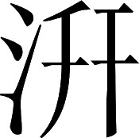

魏书 · 卷三十
乌丸鲜卑东夷传第三十
《尚书•尧典》说“蛮夷扰乱中原”，而《诗经•六月》称“ 狁势力很强盛”。可见少数族对中原的侵害为时已经很久了。秦汉以来，匈奴长期侵犯边境。汉武帝虽然对外进攻四方的少数族，例如东面平定东越、南越、朝鲜，西面讨伐贰师、大宛，西南面打通邛、笮、夜郎的通道，但是这些少数族都在边远地区以外，不能对中原地区起什么重大影响。唯有北面的匈奴距中原最近，它的骑兵向南部侵犯，将使我中原王朝三面受敌，所以汉朝屡次派遣卫青、霍去病等大将，深入敌境北伐，穷追匈奴单于，夺取其富饶平坦的草原。其后匈奴开始归顺汉朝并愿意为汉朝保卫边塞，从此逐渐衰弱。
狁势力很强盛”。可见少数族对中原的侵害为时已经很久了。秦汉以来，匈奴长期侵犯边境。汉武帝虽然对外进攻四方的少数族，例如东面平定东越、南越、朝鲜，西面讨伐贰师、大宛，西南面打通邛、笮、夜郎的通道，但是这些少数族都在边远地区以外，不能对中原地区起什么重大影响。唯有北面的匈奴距中原最近，它的骑兵向南部侵犯，将使我中原王朝三面受敌，所以汉朝屡次派遣卫青、霍去病等大将，深入敌境北伐，穷追匈奴单于，夺取其富饶平坦的草原。其后匈奴开始归顺汉朝并愿意为汉朝保卫边塞，从此逐渐衰弱。
狁势力很强盛”。可见少数族对中原的侵害为时已经很久了。秦汉以来，匈奴长期侵犯边境。汉武帝虽然对外进攻四方的少数族，例如东面平定东越、南越、朝鲜，西面讨伐贰师、大宛，西南面打通邛、笮、夜郎的通道，但是这些少数族都在边远地区以外，不能对中原地区起什么重大影响。唯有北面的匈奴距中原最近，它的骑兵向南部侵犯，将使我中原王朝三面受敌，所以汉朝屡次派遣卫青、霍去病等大将，深入敌境北伐，穷追匈奴单于，夺取其富饶平坦的草原。其后匈奴开始归顺汉朝并愿意为汉朝保卫边塞，从此逐渐衰弱。注释
注释 〖1〗
猾：扰乱。夏：中原地区。这一句出自《尚书•尧典》。
注释 〖2〗
孔：很。炽：强盛。这一句出自《诗经•六月》。
注释 〖3〗
孝武：即西汉武帝刘彻。外事四夷：对外进攻四方的少数族。
注释 〖4〗
两越：即东越、南越。又作两粤。东越的中心在今福建福州市，元封元年（前110）被平定。南越的中心在今广东广州市，元鼎六年（前111）被平定。事见《汉书》卷九十五《两粤传》。朝鲜：东北方古国名。西汉初，有原燕国人卫满逃亡到东北边塞之外，聚众立国，建都王险城（今朝鲜平壤市）。元封三年（前 108），西汉军队灭朝鲜，在故地建地玄菟、乐浪、真番、临屯四郡。事见《汉书》卷九十五《朝鲜传》。
注释 〖5〗
贰师：古城名。属大宛（yuān）国。在今吉尔吉斯国西南部马尔哈马特（Mɑpxɑmɑt）。大宛：西域古国名。在今塔吉克国费尔干纳盆地。建都贵山城（今卡散赛）。西汉武帝太初元年（前 104），曾出兵击败大宛，立新王昧蔡。事见《汉书》卷九十六上《西域大宛传》。
注释 〖6〗
邛（qióng）：即邛都夷。居住在今四川西昌市一带的少数族。苲（zuó）：又作莋，即莋都夷。居住在今四川汉源县一带的少数族。夜郎：西南方古国名。在今贵州西北、云南东北、四川南部和广西北部，当时是夜郎族人聚居之地。元鼎六年（前 111），西汉武帝在平定南越的同时，出兵进攻西南少数族，在邛都立越嶲郡、莋都立沈黎郡、夜郎立牂牁郡。事见《汉书》卷九十五《西南夷传》。
注释 〖7〗
荒服：指边远地区。
注释 〖8〗
不能为中国轻重：不能对中原地区起什么重大影响。
注释 〖9〗
诸夏：中原各地。
注释 〖10〗
卫：指卫青（？—前 106）。字仲卿，河东郡平阳（今山西临汾市西南）人。以外戚受到西汉武帝的重用，官至大将军，封长平侯。多次率军进攻匈奴，建立战功，消除了匈奴对西汉王朝的严重威胁。传见《史记》卷一百一十一、《汉书》卷五十五。霍：指霍去病。
汉献帝建安年间，匈奴的南单于呼厨泉入京朝见天子，朝廷把他留在京城做人质，派他的副手回去管理本族人。这时匈奴的臣服程度，已经超过以往的汉朝时期。但是乌丸、鲜卑却又逐渐强盛起来，他们趁汉末大乱，中原王朝忙于内务，没有时间对外讨伐的机会，竟自控制了大沙漠以南的草原，攻打城市，杀害百姓，北方边境受到严重困扰。
袁绍统一河北，开始安抚三郡乌丸，对他们的著名首领给以优厚的赏赐，同时收编他们的精锐骑兵。其后袁尚、袁熙被太祖曹操击败，逃去投奔三郡乌丸的大首领蹋顿。蹋顿十分骁勇，边境的老年人都把他比作从前匈奴族强盛时期的单于冒顿。蹋顿仗着自己远离中原，所以敢于接受内地的逃亡者，在北方少数族中称雄。太祖暗中出动大军北伐，出其不意，一战而平定了乌丸，威震河北，各少数族无不慑服。于是太祖统领乌丸族的骑兵征讨各地，从此边境居民得以安居乐业。
注释
注释 〖16〗
兼：兼并。
注释 〖17〗
三郡：指辽西郡（治所在今辽宁义县西南）、右北平郡（治所在今河北丰润县东）、辽东属国（治所在今辽宁义县）。属国是东汉在边境设置的特别行政区，长官为都尉，下有属县和领民，与郡平级，实际上是特别的郡。所以辽东属国与辽西、右北平并称为三郡。这由下文及裴注中袁绍封拜三郡事得证。三郡的地域相连，而以辽西为最大。
注释 〖18〗
名王：有名的首领。
注释 〖19〗
尚：即袁尚（？—公元 207）。袁绍的小儿子。熙：即袁熙（？—公元 207）。袁绍的二儿子。以上二人事见本书卷六《袁绍传》。蹋顿（？—公元 207）：辽西郡乌丸族首领名。
注释 〖20〗
边长老：边境地区的老年人。冒顿（mǒ dú）：匈奴族君主。秦末，杀父头曼，自立为单于。雄据漠北，有骑兵三十余万。东灭东胡，北破丁零，西击月氏（zhī）。又乘胜向南，占领河套地区，侵扰北方边境，曾在平城围困刘邦
七天七夜，对西汉王朝造成长期严重的威胁。事见《史记》卷一百十《匈奴列传》。
注释 〖21〗
亡命：从中原跑去的逃亡者。
注释 〖22〗
百蛮：泛指当地各少数族部落。
后来鲜卑族的首领轲比能又控制了北方各少数族部落，全部占领匈奴族的故地，自云中郡、五原郡以东直至辽河流域，都成为鲜卑人的领地。他们多次侵扰边境，特别是幽、并两州深受其害。魏明帝时护乌丸校尉田豫被轲比能包围在马城，并州刺史毕轨又在陉岭以北被轲比能击败。青龙年间，明帝才听从王雄的建议，派出一名剑术高强的刺客刺杀了轲比能。此后。鲜卑部落四分五裂，互相攻伐，势力强的远远逃离，势力弱的只好向朝廷投降。从此，边境稍微安定，大沙漠以南的草原上战争减少，虽然还不时发生少数族劫掠的事，却已经不能相互煽动形成强大势力了。
乌丸、鲜卑，即古所谓东胡也。其习俗、前事，撰汉记者已录而载之矣。故但举汉末、魏初以来，以备四夷之变云。﹝一﹞
乌丸、鲜卑就是古代所说的东胡。他们的习俗和以往的历史，撰写汉代史书的人已经收集并加以记载。所以这里只是叙述汉末魏初以来乌丸、鲜卑的情况，从而使史书中关于周边少数族变迁过程的记载保持完整。
裴注
裴注 ﹝一﹞
《魏书》曰：
“乌丸者，东胡也。汉初，匈奴冒顿灭其国，余类保乌丸山，因以为号焉。俗善骑射，随水草放牧；居无常处，以穹庐为宅，皆东向。日弋猎禽兽，食肉饮酪，以毛毳为衣。贵少贱老，其性悍骜；怒则杀父兄，而终不害其母；以母有族类，父兄以己为种，无复报者故也。常推募勇健能理决斗讼相侵犯者，为大人，邑落各有小帅，不世继也。数百千落自为一部，大人有所召呼，刻木为信；邑落传行，无文字，而部众莫敢违犯。氏姓无常，以大人健者名字为姓。大人以下，各自畜牧治产，不相徭役。其嫁娶皆先私通，略将女去；或半岁百日，然后遣媒人，送马牛羊以为聘娶之礼。婿随妻归，见妻家无尊卑，旦起皆拜，而不自拜其父母。为妻家仆役，二年，妻家乃厚遣送女；居处财物，一出妻家。故其俗：从妇人计；至战斗时，乃自决之。父子男女，相对蹲踞，悉髡头以为轻便。妇人至嫁时乃养发，分为髻，著句决，饰以金碧，犹中国有冠步摇也。父兄死，妻后母（执）〔报〕嫂；若无（执）〔报〕嫂者，则己子以亲之次妻伯叔焉；死则归其故夫。俗识鸟兽孕乳，时以四节。耕种常用布谷鸣为候，地宜青穄、东墙；东墙似蓬草，实如葵子，至十月熟。能作白酒，而不知作麹蘖。米常仰中国。大人能作弓矢鞍勒，锻金铁为兵器；能刺韦，作文绣，织缕毡o 。有病：知以艾灸；或烧石自熨；烧地卧上；或随痛病处，以刀决脉出血，及祝天地山川之神；无针药。贵兵死，敛尸有棺；始死则哭，葬则歌舞相送；肥养犬，以采绳婴牵；并取亡者所乘马、衣物、生时服饰，皆烧以送之；特属累犬，使护死者神灵归乎赤山。赤山在辽东西北数千里，如中国人以死之魂神归泰山也。至葬日，夜聚亲旧员坐，牵犬马历位；或歌哭者，掷肉与之；使二人口颂祝文，使死者魂神径至，历险阻，勿令横鬼遮护；达其赤山，然后杀犬马、衣物烧之。敬鬼神，祠天地日月星辰山川；及先大人有健名者，亦同祠以牛羊：祠毕皆烧之。饮食必先祭。其约法：违大人言，死；盗不止，死。其相残杀，令部落自相报；相报不止，诣大人平之；有罪者出其牛羊，以赎死命，乃止。自杀其父兄，无罪。其亡叛，为大人所捕者，诸邑落不肯受，皆逐使至雍狂地：地无山，有沙漠、流水、草木，多蝮蛇；在丁令之西南，乌孙之东北；以穷困之。
自其先为匈奴所破之后，人众孤弱，为匈奴臣服；常岁输牛马羊，过时不具，辄虏其妻子。至匈奴壹衍鞮单于时，乌丸转强；发掘匈奴单于冢，将以报冒顿所破之耻。壹衍疑单于大怒，发二万骑，以击乌丸。大将军霍光闻之，遣度辽将军范明友，将三万骑出辽东，追击匈奴。比明友兵至，匈奴已引去。乌丸新被匈奴兵，乘其衰弊，遂进击乌丸；斩首六千余级，获三王首还。后数复犯塞，明友辄征破之。至王莽末，并与匈奴为寇。
光武定天下，遣伏波将军马援将三千骑，从五原关出塞征之；无利，而杀马千余匹。乌丸遂盛，抄击匈奴；匈奴转徙千里，漠南地空。建武二十五年，乌丸大人郝（且）〔旦〕等九（千）〔百〕余人，率众诣阙，封其渠帅为侯王者八十余人；使居塞内，布列辽东属国、辽西、右北平、渔阳、广阳、上谷、代郡、雁门、太原、朔方诸郡界；招来种人，给其衣食；置校尉以领护之，遂为汉侦备，击匈奴、鲜卑。至永平中，渔阳乌丸大人钦志贲，帅种人叛，鲜卑还为寇害；辽东太守祭肜，募杀志贲，遂破其众。至安帝时，渔阳、右北平、雁门乌丸率众王无何等，复与鲜卑、匈奴合，抄略代郡、上谷、涿郡、五原；乃以大司农何熙行车骑将军，左右羽林五营士，发缘边七郡、黎阳营兵，合二万人击之。匈奴降，鲜卑、乌丸各还塞外。是后，乌丸稍复亲附，拜其大人戎末廆为都尉。至顺帝时，戎末廆率将王侯咄归、去延等，从乌丸校尉耿晔出塞，击鲜卑有功；还，皆拜为率众王，赐束帛。”
汉末，辽西乌丸大人丘力居，众五千余落；上谷乌丸大人难楼〖1〗，众九千余落：各称王。而辽东属国乌丸大人苏仆延，众千余落，自称峭王；右北平乌丸大人乌延，众八百余落，自称汗鲁王：皆有计策，勇健。中山太守张纯，叛入丘力居众中，自号“弥天安安王”，为三郡乌丸元帅；寇略青、徐、幽、冀四州，杀略吏民。
东汉末年，辽西郡乌丸族首领丘力居，统领五千多个居民点；上谷郡乌丸族首领难楼，统领九千多个居民点：他们各自称王。又有辽东属国乌丸族首领苏仆延，统领一千多个居民点，自称峭王；右北平郡乌丸族首领乌延，统领八百多个居民点，自称汗鲁王：他们都有勇有谋。中山郡太守张纯背叛朝廷，逃到丘力居部落中，自称弥天安定王，被推举为三郡乌丸的大首领。在他的指挥带领下，乌丸骑兵侵略青州、徐州、幽州、冀州，杀害官员百姓。
注释
注释 〖1〗
上谷：郡名。治所在今河北怀来县东南。
汉灵帝末年，刘虞出任幽州牧，他以重金收买少数族刺客杀死了张纯，幽州才安定下来。后来丘力居死去，他的儿子楼班年龄小，而侄儿蹋顿武艺谋略不凡，于是由蹋顿继位，总领乌丸族的三个大部落，部下都听从他的指挥。袁绍和公孙瓒对峙时，蹋顿派使者向袁绍请求通婚友好，并出兵帮助袁绍攻打公孙瓒，结果大获全胜。袁绍假托皇帝的旨意，赏赐印章、绶带给蹋顿、峭王、汗鲁王三人，把他们都立为单于。后来楼班长大，峭王率领自己的部落推尊楼班为单于；蹋顿本人不再称单于而只称王，但是重大的策略谋划仍然多半出自蹋顿之手。广阳郡人阎柔，从小流落在乌丸、鲜卑部落中，受到少数族部落的信任和尊重。阎柔借助鲜卑的力量，杀死护乌丸校尉邢举，由自己取而代之。袁绍曾对阎柔着意拉拢优待，以求安定自己的北部边境。后来袁氏势力被太祖曹操击破，袁绍死亡，其子袁尚逃去投奔蹋顿，企图凭借蹋顿势力，重新夺回冀州。不久太祖扫平河北，阎柔带领自己控制的鲜卑、乌丸人归附太祖；太祖依然任命他为护乌丸校尉，照旧持有汉朝节杖，以广宁作为他的治所。
注释
注释 〖2〗
刘虞（？—公元193）：事见本书卷八《公孙瓒传》。
注释 〖3〗
矫制：假托皇帝的旨意。
注释 〖4〗
广阳：郡名。治所在今北京市。阎柔：事见本书卷八《公孙瓒传》。
注释 〖5〗
没：沦落。
注释 〖6〗
乌丸校尉：官名。即护乌丸校尉。管理和监视乌丸族人。
注释 〖7〗
校尉：指护乌丸校尉。
注释 〖8〗
广宁：县名。在今河北张家口市。
裴注
裴注 ﹝一﹞
《英雄记》曰：“绍遣使，即拜乌丸三王为单于，皆安车、华盖、羽旄、黄屋、左纛；版文曰：‘使持节、大将军、督幽青并、领冀州牧、（阮）〔邟〕乡侯绍，承制诏辽东属国率众王颁下、乌丸辽西率众王蹋顿、右北平率众王汗卢：维乃祖慕义迁善，款塞内附；北捍 狁，东拒濊貊；世守北陲，为百姓保障。虽时侵犯王略，命将徂征厥罪；率不旋时，悔愆变改。方之外夷，最（又）〔为〕聪惠者也。始有千夫长、百夫长以相统领，用能悉乃心，克有勋力于国家，稍受王侯之命。自我王室多故，公孙瓒作难，残夷厥土之君，以侮天慢主；是以四海之内，并执干戈以卫社稷。三王奋气裔土，忿奸忧国，控弦与汉兵为表里：诚甚忠孝，朝所嘉焉。然而虎兕长蛇，相随塞路；王官爵命，否而无闻。夫有勋不赏，俾勤者怠；今遣行谒者杨林，赍单于玺绶车服，以对尔劳。其各绥静部落，教以谨慎，无使作凶作慝；世复尔祀位，长为百蛮长。厥有咎有不臧者，泯于尔禄，而丧于乃庸。可不勉乎！乌桓单于都护部众，左右单于受其节度；他如故事。’”
狁，东拒濊貊；世守北陲，为百姓保障。虽时侵犯王略，命将徂征厥罪；率不旋时，悔愆变改。方之外夷，最（又）〔为〕聪惠者也。始有千夫长、百夫长以相统领，用能悉乃心，克有勋力于国家，稍受王侯之命。自我王室多故，公孙瓒作难，残夷厥土之君，以侮天慢主；是以四海之内，并执干戈以卫社稷。三王奋气裔土，忿奸忧国，控弦与汉兵为表里：诚甚忠孝，朝所嘉焉。然而虎兕长蛇，相随塞路；王官爵命，否而无闻。夫有勋不赏，俾勤者怠；今遣行谒者杨林，赍单于玺绶车服，以对尔劳。其各绥静部落，教以谨慎，无使作凶作慝；世复尔祀位，长为百蛮长。厥有咎有不臧者，泯于尔禄，而丧于乃庸。可不勉乎！乌桓单于都护部众，左右单于受其节度；他如故事。’”
狁，东拒濊貊；世守北陲，为百姓保障。虽时侵犯王略，命将徂征厥罪；率不旋时，悔愆变改。方之外夷，最（又）〔为〕聪惠者也。始有千夫长、百夫长以相统领，用能悉乃心，克有勋力于国家，稍受王侯之命。自我王室多故，公孙瓒作难，残夷厥土之君，以侮天慢主；是以四海之内，并执干戈以卫社稷。三王奋气裔土，忿奸忧国，控弦与汉兵为表里：诚甚忠孝，朝所嘉焉。然而虎兕长蛇，相随塞路；王官爵命，否而无闻。夫有勋不赏，俾勤者怠；今遣行谒者杨林，赍单于玺绶车服，以对尔劳。其各绥静部落，教以谨慎，无使作凶作慝；世复尔祀位，长为百蛮长。厥有咎有不臧者，泯于尔禄，而丧于乃庸。可不勉乎！乌桓单于都护部众，左右单于受其节度；他如故事。’”建安十二年（公元 207），太祖亲自征讨蹋顿，设计麻痹敌人之后悄悄改走小路，直奔对方的大本营柳城。距柳城只有一百多里，敌军才发现。袁尚和蹋顿在凡城迎战太祖，阵容十分强大。太祖登上高处观察敌人的阵势，先按兵不动，等敌阵稍有破绽，立即挥兵进攻打破敌方阵形，斩了蹋顿，直杀得尸横遍野。速附丸、楼班、乌延等乌丸族首领逃往辽东，辽东的公孙康把他们杀死，然后用驿车把头颅送往京城。其余逃散的人全部投降。太祖把收降的乌丸族俘虏，以及阎柔在幽州、并州所控制的一万多个居民点的乌丸族人，全部迁入中原，带领他们的首领和部落民众转战四方，从此三郡乌丸的铁骑兵天下闻名。
注释
注释 〖1〗
中兄：二哥。
裴注
裴注 ﹝一﹞
《魏书》曰：
“鲜卑，亦东胡之余也；别保鲜卑山，因号焉。其言语习俗与乌丸同。其地东接辽水，西当西（城）〔域〕。常以季春大会（作）〔于饶〕乐水上，嫁女娶妇，髡头饮宴。其兽异于中国者：野马、羱羊、端牛。端牛角为弓，世谓之角端者也。又有貂、豽、鼲子；皮毛柔蠕，故天下以为名裘。鲜卑自为冒顿所破，远窜辽东塞外；不与余国争衡，未有名通于汉，而由自与乌丸相接。
至光武时，南、北单于更相攻伐，匈奴损耗，而鲜卑遂盛。建武三十年，鲜卑大人于仇贲，率种人诣阙朝贡，封于仇贲为王。永平中，祭肜为辽东太守，诱赂鲜卑，使斩叛乌丸钦志贲等首；于是鲜卑自敦煌、酒泉以东，邑落大人皆诣辽东受赏赐；青、徐二州给钱，岁二亿七千万，以为常。和帝时，鲜卑大都护校尉廆，帅部众从乌丸校尉任尚，击叛者，封校尉廆为率众王。殇帝延平中，鲜卑乃东入塞，杀渔阳太守张显。安帝时，鲜卑大人燕荔阳，入朝；汉赐鲜卑王印绶，赤车参驾；止乌丸校尉所治宁〔城〕下；通胡市，筑南北两部（质宫）〔质馆〕，受邑落质者〔百〕二十部。是后或反或降，或与匈奴、乌丸相攻击。安帝末，发缘边步骑二万余人，屯列冲要。后鲜卑八九千骑，穿代郡及马城塞，入害长吏；汉遣度辽将军邓遵、中郎将马续，出塞追破之。鲜卑大人乌伦、其至鞬等七千余人，诣遵降；封乌伦为王，其至鞬为侯，赐采帛。遵去后，其至鞬复反，围乌丸校尉于马城；度辽将军耿夔及幽州刺史救解之。其至鞬遂盛，控弦数万骑，数道入塞，趣五原（宁貊）〔曼柏〕；攻匈奴南单于，杀左奥鞬日逐王。顺帝时，复入塞，杀代郡太守。汉遣黎阳营兵屯中山，缘边郡兵屯塞下；调五营弩帅，令教战射。南单于将步骑万余人，助汉，击却之。后乌丸校尉耿晔，将率众王出塞，击鲜卑，多斩首虏；于是鲜卑三万余落，诣辽东降。匈奴及北单于遁逃后，余种十余万落，诣辽东杂处，皆自号‘鲜卑兵’。
投鹿侯从匈奴军三年；其妻在家，有子。投鹿侯归，怪欲杀之。妻言：‘尝昼行闻雷震，仰天视而电入其口，因吞之，遂妊身，十月而产；此子必有奇异，且长之！’投鹿侯固不信。妻乃语家，令收养焉，号‘檀石槐’；长大勇健，智略绝众。年十四五，异部大人卜贲邑，抄取其外家牛羊。檀石槐策骑追击，所向无前；悉还得所亡，由是部落畏服；施法禁，〔平〕曲直，莫敢犯者：遂推以为大人。檀石槐既立，乃为庭于高柳北三百余里弹汗山啜仇水上，东、西部大人皆归焉。兵马甚盛，南抄汉边，北拒丁令，东却夫余，西击乌孙；尽据匈奴故地，东西万（二）〔四〕千余里，南北七千余里，网罗山川、水泽、盐池甚广。汉患之，桓帝时，使匈奴中郎将张奂征之，不克；乃更遣使者赍印绶，即封檀石槐为王，欲与和亲。檀石槐拒不肯受，寇抄滋甚，乃分其地为中、东、西三部。从右北平以东至辽，东接夫余、〔濊〕貊，为东部；二十余邑，其大人曰弥加、阙机、素利、槐头。从右北平以西至上谷，为中部；十余邑，其大人曰柯最、阙居，慕容等为大帅。从上谷以西至敦煌，西接乌孙，为西部；二十余邑，其大人曰置鞬落罗、日律推演，宴荔游等皆为大帅：而制属檀石槐。至灵帝时，大抄略幽、并二州；缘边诸郡，无岁不被其毒。（嘉）〔熹〕平六年，遣护乌丸校尉夏育、破鲜卑中郎将田晏、匈奴中郎将臧旻与南单于，出雁门塞，三道并进，径二千余里，征之。檀石槐帅部众逆击，旻等败走，兵马还者，什一而已。鲜卑众日多，田畜射猎，不足给食。后檀石槐乃案行乌侯秦水，广袤数百里，渟不流，中有鱼而不能得。闻汗人善捕鱼，于是檀石槐东击汗国，得千余家，徙置乌侯秦水上，使捕鱼以助粮。至于今，乌侯秦水上有汗人数百户。
檀石槐年四十五死，子和连，代立。和连材力不及父，而贪淫，断法不平，众叛者半。灵帝末年数为寇抄，攻北地；北地（庶）〔廉〕人善弩射者，射中和连，和连即死。其子骞曼小，兄子魁头，代立。魁头既立后，骞曼长大，与魁头争国，众遂离散。魁头死，弟步度根代立。自檀石槐死后，诸大人遂世相袭也。”
汉献帝建安年间，大祖曹操平定幽州，步度根和轲比能等鲜卑族首领通过护乌丸校尉阎柔，向朝廷称臣上贡。后来代郡的乌丸族首领能臣氐等人反叛，请求归附扶罗韩。扶罗韩统率一万多骑兵前往迎接。到了桑干县，能臣氐等人暗中商议，认为扶罗韩对部众控制不严，恐怕得不到有力的救助，于是另外派人向轲比能联络。轲比能马上带领上万骑兵赶来会面，并与能臣氏等人一起对天结盟立誓。轲比能随即在宴会上杀死扶罗韩，扶罗韩的儿子泄归泥和部众都成为轲比能的下属。考虑到自己杀死了泄归泥的父亲，所以轲比能给予泄归泥特别优厚的待遇。但是步度根却因此而怨恨轲比能。
魏文帝曹丕即位后，任命田豫为护乌丸校尉，持有节杖，在管理监视乌丸的同时又管理监视鲜卑，驻扎在昌平。这时步度根派人向朝廷献马，文帝下诏封步度根为鲜卑王。从此步度根与轲比能多次相互攻杀，步度根势力日渐衰弱，只得率领部下一万多个居民点的民众进入塞内的太原、雁门郡据守。步度根又派人对泄归泥说：“你父亲被轲比能杀害，您不想法报仇，反而投靠自己的仇人。他今天虽然厚待你，其实是想日后杀死你。还不如回来跟随我，我是你的骨肉至亲，难道还比不上杀父的仇人吗？”于是泄归泥率领本部落逃去投奔叔父步度根。轲比能得知消息后立即派兵追赶，却没有追上。到了黄初五年（公元 224），步度根本人亲自到朝廷上贡，得到文帝的重赏，从此他开始替魏朝守卫边疆，不再侵掠中原，而塞外的轲比能势力却越来越大。
魏明帝即位之后，急于想安抚各少数族，以减少战争，所以对步度根、轲比能两部分鲜卑都采取笼络的办法。青龙元年（公元233），轲比能诱使步度根与自己和好并结成同盟，结果步度根又率领泄归泥和部众去依附轲比能，同时动手侵扰抢掠并州，杀害官员百姓。明帝派遣骁骑将军秦朗前往征讨，泄归泥背叛轲比能，率领部众投降，朝廷封他为归义王，赐给他幢麾、曲盖和仪仗乐队，让他依旧住在并州。步度根则被轲比能杀死。
轲比能本来出自鲜卑的一个小部落，因为勇敢善战，执法公平，不贪财物，所以众人推举他作为首领。他的部落靠近边塞，自从袁绍占据河北，中原汉人有很多逃去投奔轲比能；他们教轲比能部落的鲜卑人制作兵器、铠甲、盾牌，还教他们学习汉文，所以他指挥控制部下，完全模仿中原的汉人。每当他外出或者去打猎，都树立军旗，以鼓声作为进退的信号。
建安中，因阎柔上贡献。太祖西征关中，田银反河间，比能将三千余骑随柔击破银。后代郡乌丸反，比能复助为寇害，太祖以鄢陵侯彰为骁骑将军〖15〗，北征，大破之。比能走出塞，后复通贡献。
建安年间，他通过阎柔向朝廷进贡。太祖西征关中，田银在河间郡造反，轲比能亲率三千骑兵随阎柔击败田银。后来代郡的乌丸族反叛，轲比能开始帮助他们与朝廷作对。太祖任命鄢陵侯曹彰为骁骑将军，率军北征，大败轲比能。轲比能逃出塞外，后来他又向朝廷称臣进贡。
注释
注释 〖15〗
彰：即曹彰（？—公元 223）。曹操的儿子。传见本书卷十九。
延康初，比能遣使献马，文帝亦立比能为附义王。黄初二年，比能出诸魏人在鲜卑者五百余家，还居代郡。明年，比能帅部落大人、小子、代郡乌丸修武卢等三千条骑，驱牛马七万余口交市〖16〗，遣魏人千余家居上谷。后与东部鲜卑大人素利及步度根三部争斗，更相攻击。田豫和合，使不得相侵。
延康元年（公元 220）年初，轲比能派人向朝廷献马，魏文帝曹丕封轲比能为附义王。黄初二年（公元 221），轲比能把住在鲜卑部落中的五百多家内地汉人放走，让他们回到代郡居住。黄初三年（公元 222），轲比能率领本部落的头领和平民，以及代郡的乌丸族首领普富卢等一共三千多骑兵，驱赶七万多头牛马来与中原交换物品，同时又放回内地汉人一千多家到上谷郡居住。后来轲比能与东部鲜卑的首领素利以及步度根争斗，互相攻击。田豫任护乌丸校尉后，在他们之间进行调解，不准他们彼此攻杀。
注释
注释 〖16〗
交市：交易。
黄初五年（公元 224），轲比能又去进攻素利，田豫率轻骑兵赶到他的后方进行牵制。轲比能派了一个小首领琐奴抵御田豫，田豫挥兵出击，击退琐奴，轲比能从此对朝廷生了二心。他给辅国将军鲜于辅写信说：“我们少数族不识文字，所以前任护乌丸校尉阎柔替我向天子表示忠心。我与素利是仇人，去年派兵攻打他，但是现任护乌丸校尉田豫却帮助素利。我在战场上派琐奴前往抵抗田豫，听说您带兵来到，马上撤回了军队。步度根多次抢掠，又杀死我弟弟，反而诬蔑我在抢掠。我们少数族虽然不知礼义，但是兄弟子孙都承蒙天子赐给印绶，牛马尚且知道水草的滋味鲜美，何况我们还是有灵性的人呢。将军应替我向天子讲明情况。”鲜于辅得到书信后上报朝廷，文帝又派田豫去招纳安抚。
轲比能的势力从此开始强大，全盛时拥有能征善战的骑兵十余万人。每次抢得财物，他都平均分配，当着众人一下子分配完毕，从不私吞，所以部下愿意为他拼死效力，其余部落的首领都很敬畏他。但是他的势力还赶不上汉朝时鲜卑的大酋长檀石槐。
太和二年（公元 228），田豫派遣翻译官夏舍到轲比能女婿郁筑鞬的部落去，结果夏舍被郁筑鞬杀害。这年秋天，田豫统帅西部鲜卑的首领蒲头和泄归泥，出塞讨伐郁筑鞬，大获全胜。回军到达马城时，轲比能亲率三万铁骑兵，把田豫困围了七天七夜。上谷郡太守阎志，是阎柔的弟弟，历来受到鲜卑人的信任。阎志亲自赶到马城开解劝说，轲比能才撤军解围。后来幽州刺史王雄兼任护鲜卑校尉，用恩德和信用对鲜卑实行安抚。轲比能也多次入塞，到幽州州政府来进贡。
至青龙元年，比能诱纳步度根，使叛并州，与结和亲；自勒万骑迎其累重于陉北。并州刺史毕轨遣将军苏尚、董弼等击之；比能遣子将骑与尚等会战于楼烦〖27〗，临阵害尚、弼。
青龙元年（公元 233），轲比能诱使步度根，让他背叛并州当局，和自己结盟，又亲率一万骑兵在陉岭以北迎接他的家属和辎重队伍。并州刺史毕轨派苏尚、董弼等将阻击，轲比能让儿子领兵在楼烦与苏尚等将会战，在激战中杀死苏尚、董弼二将。
注释
注释 〖27〗
楼烦：县名。县治在今山西宁武县。
至三年中〖28〗，雄遣勇士韩龙刺杀比能，更立其弟。
青龙三年（公元 235），王雄派勇士韩龙刺死轲比能，另立轲比能的弟弟为首领。
注释
注释 〖28〗
三年：太和三年（公元 229）。
素利、弥加、厥机皆为大人，在辽西、右北平、渔阳塞外；道远，初不为边患〖29〗，然其种众多于比能。建安中，因阎柔上贡献，通市；太祖皆表宠以为王。厥机死，又立其子沙末汗为亲汉王。延康初，又各遣使献马。文帝立素利、弥加为归义王。素利与比能更相攻击。太和二年，素利死，子小。以弟成律归为王，代摄其众。
素利、弥加、厥机，都是鲜卑的部落首领，在辽西、右北平和渔阳三郡的塞外。由于距离遥远，对内地完全没有构成祸患，但是他们部落的人数要比轲比能多。建安年间，他们也通过阎柔向朝廷进贡，并与内地进行实物交换，太祖曹操上表朝廷都封他们为王以示优宠。厥机死后，朝廷又立他的儿子沙末汗为亲汉王。延康元年（公元220）年初，他们派使者进献马匹。魏文帝封素利、弥加为归义王。素利和轲比能相互攻击。太和二年（公元 228），素利去世。他的儿子年幼，朝廷封他的弟弟成律归为王，代为统领部落。
注释
注释 〖29〗
初不：完全不。
《尚书•禹贡》说“东边到达大海，西边达到大沙漠”。对于京都以外由近到远的九等地区，我们都还可以说得清楚。但是在边荒地带以外，那些需要通过中间语言转译我们才能了解其情况，向我们的足迹却不能到达的地方，那里的国家中风土民情如何，就没有人能知道了。从虞舜到周朝，西边的远方曾进贡过白玉环，东边的肃慎氏也进贡过当地产的弓箭，他们都走了很长很长的时间才到达中国，其距离竟是如此之远。汉代派遣张骞出使西域，探究黄河源头，经历许多国家，并设置了西域都护以统领各国。从这以后，才知道西域的详细情况，史官才能在史书中加以详细记载。
注释
注释 〖1〗
渐：到达。
注释 〖2〗
被于：及于。流沙：西部的沙漠地带。这两句出自《尚书•禹贡》。
注释 〖3〗
九服：京都以外的九等地区。由近到远，依次为侯服、甸服、男服、采服、卫服、蛮服、夷服、镇服、藩服。见《周礼•夏官•职方氏》。
注释 〖4〗
重（chóng）译：通过中间语言转译。
注释 〖5〗
殊方：异域。这里指确切的地理方位。
注释 〖6〗
白环：白玉环。传说在虞舜时，西方曾来献白玉环，见《艺文类聚》卷六十七引《世本》。
注释 〖7〗
张骞（？—前 114）：汉中郡成固（今陕西城固县）人。前 139 年，受汉武帝之命出使大月氏，约同夹击匈奴。越过葱岭，历大宛、康居、大月支、大夏等国，途中被匈奴扣留，历时十三年才回到长安。前 119 年，再度奉武帝命出使乌孙，并派副使至大宛、康居、大夏、安息等国。以功任大行，封博望侯。他对开通西域贡献巨大。传见《史记》卷一百一十一、《汉书》卷六十一。西域：地区名。狭义的西域指葱岭以东、玉门关和阳关以西的地区。广义的西域，则指凡通过狭义西域所能到达的地区，包括亚洲中部和西部、印度半岛、欧洲东部、非洲北部等。
注释 〖8〗
河：黄河。
注释 〖9〗
都护：官名。即西域都护。西汉宣帝神爵二年（前60）开始设置。负责管理西域各国。治所西汉在乌垒城（今新疆轮台县东），东汉在它乾城（今新疆新和县南）。
魏朝建立之后，西域各国虽然不能都来朝贡，但是其中一些大国如龟兹、于阗、康居、乌孙、疏勒、月氏、鄯善、车师等，没有哪一年不派使者前来洛阳呈献贡品，大体与汉代的情形也差不多了。公孙渊继承其祖父公孙度、父亲公孙康，三代人连续占有和统治辽东，魏明帝考虑到其地遥远，就将辽东的事务委托给他管理。这样一来，就把东北方的少数族隔断，使他们不能和中原往来。
注释
注释 〖10〗
龟（qiū）兹：西域古国名。在今新疆库车县一带。于阗（tián）：西域古国名。在今新疆和田市一带。康居：西域古国名。在今巴尔喀什湖与咸海之间。乌孙：西域古国名。汉代在今新疆伊犁河和吉尔吉斯国伊塞克湖一带，建都赤谷城（今吉尔吉斯国伊什提克市）。疏勒：西域古国名。在今新疆喀什市一带。月氏（zhī）：西域古国名。在今新疆伊犁河流域及其以西地带。鄯善：西域古国名。在今新疆若羌县一带。车师：西域古国名。在今新疆吐鲁番市一带。分前后二部。前部的中心在交河城（今新疆吐鲁番市西北）。后部的中心在务涂谷城（今新疆奇台县西南）。
注释 〖11〗
仍：继承。
注释 〖12〗
绝域：极远的地方。
注释 〖13〗
东夷：指东北方的各少数族。
景初年间，朝廷出动大军，诛灭公孙渊，又悄悄派水军渡海，收复了乐浪、带方等郡，从此滨海地区安定太平，东部少数族全都俯首称臣。其后，高句丽首先背叛，朝廷派幽州的地方军队前去讨伐，穷追到极远的地方，跨越乌丸、丸都，经过沃沮，又进入肃慎的领域，直到东边的大海。当地的老人说，在大海那边靠近太阳升起的地方，曾有颈上又长了一副脸孔的怪人出现，于是毌丘俭等领兵将军在凯旋时注意观察各国情况，记录其法律风俗，国家大小，以及各自的名称。
虽然这里所记载的都是一些少数族国家，却保存着从中原传去的礼仪风俗。古人曾说，礼仪在中原失传后，可以在周边的少数族中访求得到，这确实是可信的话。因此，下面依次记述东北方的各国情况，列举他们的异同，以此来补充从前史书记载得不完整的地方。
夫余，在长城的北边，离玄菟郡有一千多里，南面邻接高句丽，东面邻接挹娄，西面邻接鲜卑，北面是弱水，方圆约二千里。全国有八万户人家，定居在当地，有房屋、仓库、监狱。夫余的地形多山丘和广阔的低地，在东北方各国当中，算是地势最为平坦开阔的一个。土地适宜种植五谷，但不宜种植果树。这里的人长得魁伟高大，勇敢而忠厚，从不抢掠他人。
国有君王，皆以六畜名官：有马加、牛加、猪加、狗加、大使、大使者、使者。邑落有豪民，名下户皆为奴仆。诸加别主四出，道大者主数千家，小者数百家。
他们的国家有君主，官职都有牲畜来命名，有马加、牛加、猪加、狗加、大使、大使者、使者等官名。在城乡居民点里有大户豪族，附在他们名下的人家都是他们的奴仆。各个以“加”命名的官吏分别主管四方道路所到达的地区，多的主管数千家，小的数百家。
他们在吃喝时都用俎、豆这类中原传统的器具，君臣之间有定期聚会。聚会时如果举行宴饮，也有拜爵、洗爵的程序，以及作揖行礼，相互谦让之类的礼节。在殷历正月举行祭天活动，到时候国内举行集会，连日欢聚宴饮，载歌载舞，称之为迎鼓。每年这个时候停止审讯犯人，同时还释放囚徒。夫余国崇尚白色，人们穿带有白布长袖的袍子和裤子，脚穿兽皮鞋。但如出使国外，则喜欢穿锦绣和毛织品做的衣服，官员加穿狐狸、白狖和黑貂皮制成的裘衣，并在帽子上用金银装饰。从事翻译的人在表达意思时，总要跪下来，双手撑地，小声说话。
夫余国用刑严厉，杀人者处以死刑，犯人家属都沦为奴隶。偷盗东西，一件罚赔十二件。男女淫乱，妇女妒忌，都将被处死。特别憎恶女性的妒忌，杀死妒忌的妇女后，把尸首丢在该国南面的山上，直至腐烂。女方家里如想要回尸首，必须向官方上交牛马。
哥哥死后，弟弟可以娶嫂为妻，这个习俗与匈奴相同。夫余人特别擅长饲养牲畜，盛产骏马、赤玉、貂狖皮、珍珠。珍珠大得像酸枣。兵器主要是弓、箭、刀、矛，每家都有铠甲和武器。国内的老人都自称是过去的逃亡者。修建的城墙、围栅都呈圆形，就好似监狱一般。不论男女老少，也不管白天黑夜，人们在路上行走，总是要唱歌，歌声整天不断。有军事行动时也要祭天，杀牛以后看牛蹄，用以占卜吉凶，牛蹄分开是凶，如果合拢是吉。有敌人时，各个以“加”命名的官员亲自作战，下等的民户只负责他们的饮食供应。人死之后，夏天用冰冻起来。盛行杀人殉葬，殉葬者多的上百人，又时兴厚葬，有外棺而无内棺。
夫余本来属玄菟郡管辖。汉末，公孙度在辽东郡称雄扩张，威震邻近的少数族，夫余国王尉仇台自己改属辽东。当时高句丽、鲜卑都很强盛，公孙度考虑到夫余夹在这两强中间，于是把同宗族的女子嫁给尉仇台以示支持。尉仇台死后，他的孙子简位居继位。简位居的正妻没有生儿子，只有一个小妾生的儿子叫做麻余。简位居死后，各个官员拥立麻余为王。当时牛加的侄儿叫做位居，是主管外交的官员，他为人慷慨，喜欢赈济穷人，深受本国人的拥戴，每年他都派使者到魏朝京城进贡。
正始年间，幽州刺史毌丘俭讨伐高句丽，派遣玄菟郡太守王颀来到夫余，位居派官员出城迎接，供给军粮。他那当牛加的叔父怀有二心，于是位居杀死叔父及其儿子，登记造册没收其财产，并派使者把尸体简单收敛后送到官府。按照夫余过去的风俗，如遇水旱灾害，粮食减产，总是把罪过归给国王，有的说国王该替换，有的说国王该杀死。麻余死时，他的儿子依虑才六岁，被立为国王。
汉朝的时候，夫余国王死后用金镂玉衣埋葬，常常由汉朝预先做好后运去存放在玄菟郡；国王死后，就去郡里领取用来安葬死者。公孙渊被诛灭时，玄菟郡的仓库里还有一套金镂玉衣。现今夫余的国库收藏有璧、珪、瓒等几代相传的玉器，被视为国宝，老人们说这些都是从前中原王朝赏赐的。国王印章的文字是“濊王之印”，国内有一老城叫做濊城，因为夫余本是濊貊的地域，而夫余人在其中称王；他们自称是外地来的流亡者，似乎也有点像这么一回事。
注释
注释 〖28〗
玉匣：即金镂玉衣。用金线连接小方块玉片做成的衣裤。衣裤连成一体。穿在尸体外面，古代认为可以保持尸体不腐败。现今考古工作者已发现多件实物。
注释 〖29〗
璧：玉器名。平圆形，正中有孔。也有用琉璃做成的。古代用做贵族朝聘、祭祀，丧葬用的礼器。珪：玉器名。上圆下方或上尖下方的长方形玉版。帝王诸侯所执，用作凭信。瓒：玉器名。舀酒的玉勺。
注释 〖30〗
王（wàng）其中：在其中称王。
注释 〖31〗
抑有似也：恐怕是有道理的。
高句丽，在辽东郡以东约一千里，南边与朝鲜、濊貊，东边与沃沮，北边与夫余接壤。在丸都山下建都，全国方圆二千里，共有三万户人家。国内多高山深谷，没有平原和沼泽。当地人在山谷中居住，饮山涧的流水。土地贫瘠，虽然努力耕作，也不能自给自足；所以当地风俗是在饮食上节俭，而喜欢修建和装饰住房。在住宅左右盖大屋，用来祭祀鬼神，还祭祀灵星、土神和谷神以求丰收。当地人性情凶猛急躁，喜欢抢掠。
有国王，官吏有相加、对卢、沛者、古雏加、主簿、优台丞、使者、皂衣先人等官号，尊卑各有等级区别。按东北少数族过去的说法，高句丽乃是夫余的一个分支，因此在语言的各个方面多半和夫余相同，但是性格气质、衣服装饰则与夫余大不一样。原来全国有五个家族，即是涓奴部、绝奴部、顺奴部、灌奴部、桂娄部。过去一直由涓奴部称王，后来这个家族逐渐衰弱，而今桂娄部已取而代之。
汉朝时，朝廷赐给高句丽仪仗乐队和歌舞艺人，他们常常在玄菟郡领取官服、衣帽等物，全国的户口则由玄菟郡治所高句丽县的县令主管。后来高句丽逐渐骄傲放纵，不再亲自到玄菟郡，而是在东部边境筑了一个小城，要朝廷把官服等物送到这里，他们每年在这里取走它们。现今当地少数族人还称这个小城叫帻沟溇。沟溇，是高句丽人对城的称呼。
这里设置官职时，有对卢就不设沛者，有沛者也就不设对卢。国王的宗族，如果担任高官，都叫古雏加。涓奴部本来是一国之主；而今虽然不再称王，但是这个家族的嫡系首领，也可以叫古雏加，还能设立宗庙，祭礼灵星、土神和谷神。绝奴部世代与王族通婚，所以加上“古雏”的名号。各个高级官员可以设置自己的使者、皂衣先人两种官员，这两种官员可以向国王通报名字，就像中原古代卿大夫的家臣一样；但是在参加朝廷聚会时，他们站立和坐下的位置，都不能和国王的使者、皂衣先人并列。高句丽的大户人家不参加劳动，这种白吃饭的有一万多人，他们的奴仆从远处担来粮食、鱼、盐供养他们。
当地人民喜欢歌舞，国内各个居民点，每当夜幕降临，男女成群聚集，相互唱歌嬉戏。国家没有大仓库，每家自有一座小仓，名叫桴京。人们喜欢清洁，自尊自爱，又善于酿酒。跪拜时伸出一脚，这一点与夫余不同。走路很快。在十月份祭天，到时候全国集会，叫做东盟。在社会场合，人们多穿锦绣衣服，并用金银装饰。主簿以上的大官包头巾，但是没有头后面的下垂部分。小官戴一种叫做折风的帽子，形状像中原汉族的皮帽。这个国家东部有个巨大的洞穴，叫做隧穴。十月份国中举行集会，迎接隧神到本国东部进行祭祀，并在神座上放置钻木取火用的木块。没有监狱，犯罪案件由大官评议，然后马上处决罪犯，其妻子儿女罚为奴婢。
当地的婚姻风俗，双方口头定婚后，女家在大屋后新盖一间小屋，叫做婿屋。女婿在晚上来到女家门外，自报姓名行跪拜礼，请求和女孩同宿，经过再三恳求，女方父母才让女婿到小屋中和女儿同宿，并在小屋旁放上银钱和布匹；等到生下儿女而且长大后，女婿才带妻子回自己的家。当地风俗淫荡。男女结婚后，便开始做为自己送终的衣服。盛行厚葬，金银财宝，都用来陪葬。坟墓用石头垒成，然后种植松柏。当地马很小，善于登山。人们都很有力气，战斗经验丰富，沃沮、东濊都依附他们。
国内还有一个小部落叫做小水貊。高句丽的国民依傍大河而居，而西安平县北有一条小河，南流入海；高句丽的这个小部落依傍小河居住，所以叫做小水貊。小水貊出产良弓，通常人们所说的貊弓就是这里出产的。
王莽开始征调高句丽的士兵去讨伐匈奴。高句丽人不愿从征，王莽强迫从军，于是高句丽人纷纷逃出塞外做强盗。当时的辽西大尹田谭领兵追击，反被这些人杀死。州、郡、县各级官员都把责任推到高句丽国王驺的身上。但是大臣严尤上奏说：“这件事确实是貊人犯法，但是事情的起因不在驺的身上，所以应当对他进行安抚。而今突然给他从重定上大罪，恐怕会逼迫他反叛。”王莽不听劝告，下诏让严尤出兵讨伐。严尤诱骗驺在约定的时间会面，驺一到就被杀死，头颅被驿车运送到长安。王莽大为高兴，向天下发布文告，把高句丽改名为下句丽。那时高句丽只是侯国。
汉光武帝八年（公元32），高句丽国王派使者向朝廷进贡，才开始称王。在汉殇帝和汉安帝时，高句丽的国王宫多次侵扰辽东，朝廷又把它划归玄菟郡管辖。辽东郡太守蔡风、玄菟郡太守姚光认为，宫是二郡的一大祸害，于是出兵讨伐。宫假装投降求和，二郡军队暂停前进，这时宫却秘密派遣军队去偷袭玄菟郡，焚烧候城县，攻入辽隧城，残杀官员百姓。后来宫又侵犯辽东，蔡风轻率决定领兵追击，结果全军覆没。宫死后，他的弟弟遂成继位。遂成死后，他的儿子伯固继位。汉顺帝、汉桓帝时，伯固又侵犯辽东，攻掠新昌、安市两县百姓的住地，同时又进攻西安平县，在路上还杀死带方县令，抢走乐浪郡太守的妻子和儿女。
注释
注释 〖29〗
殇：即东汉殇帝刘隆（公元 105—106）。公元 105 至 106 年在位。继位时出生才一百多天。次年死。事详《后汉书》卷四。安：即东汉安帝刘祐（公元 94—125）。公元 106 至125 年在位。在位期间自然灾害频繁。各方的少数族不断发起武装反抗，尤以西北的羌族反抗为激烈，政局日益衰败。事详《后汉书》卷五。
注释 〖30〗
候城：县名。县治在今辽宁沈阳市东南。
注释 〖31〗
辽隧：县名。县治在今辽宁海城市西北。
注释 〖32〗
轻：轻率。
注释 〖33〗
顺：即东汉顺帝刘保（公元 115—144）。安帝的儿子。公元 125 至 144 年在位。即位时仅十一岁。因受宦官支持才得以继承帝位，故在位期间优待宦官，宦官势力扩张。事详《后汉书》卷六。桓：即东汉桓帝刘志（公元 132—167）。公元 146 至 167 年在位。在位期间，外戚和宦官先后控制朝政，引起士大夫集团和太学生的强烈不满。他命令逮捕李膺等二百余人，史称党锢之祸。事详《后汉书》卷七。
注释 〖34〗
新：即新昌。县名。县治在今辽宁海城市东北。安：即安市。县名。县治在今辽宁海城市东南。居乡：百姓居住的乡村。
注释 〖35〗
带方：县名。县治在今朝鲜黄海北道沙里院市东南。
汉灵帝建宁二年（公元 169），玄菟郡太守耿临出兵讨伐，斩杀数百人，伯固投降，该国又归属辽东郡管辖。熹平年间，伯固乞求归属玄菟郡。公孙度在辽东称雄时，伯固曾派遣大官优居、主簿然人等协助公孙度讨伐富山的叛贼，获胜。伯固死时，有两个儿子，大儿子叫拨奇，小儿子叫伊夷模。拨奇不成材，本国人就拥立伊夷模做了国王。自伯固时起，高句丽就不断侵扰辽东，又接纳了逃亡的少数族人五百多家。
建安中，公孙康出军击之，破其国，焚烧邑落。拔奇怨为兄而不得立，与涓奴加各将下户三万余口〖38〗，诣康降，还住沸流水。降胡亦叛伊夷模；伊夷模更作新国，今日所在是也。拔奇遂往辽东；有子留句丽国，今古雏加驳位居是也。其后复击玄菟，玄菟与辽东合击，大破之。
建安年间，公孙康出军进攻高句丽，攻破该国，焚烧城市和村庄。拨奇因自己是长子却不能继承王位而怨恨，于是和涓奴部家族中的高级官员，各自统领自己的奴婢共三万多人向公孙康投降，然后回来驻扎在沸流水沿岸。前来投奔的少数族人这时也背叛了伊夷模，伊夷模只得换地方另立新国，也就是今天的所在地。拨奇移住辽东，他的儿子留在高句丽国，现今担任古雏加的驳位居，就是拨奇的儿子，后来高句丽又侵犯玄菟郡，玄菟和辽东二郡联合出击，把对方打得大败。
注释
注释 〖38〗
涓奴加：涓奴部的官员。
伊夷模无子，淫灌奴部〖39〗，生子名位宫；伊夷模死，立以为王，今句丽王宫是也。其曾祖名宫，生能开目视，其国人恶之；及长大，果凶虐，数寇抄，国见残破。今王生堕地，亦能开目视人。句丽呼相似为“位”，似其祖，故名之为“位宫”。
位宫有力勇，便鞍马，善猎射。景初二年，太尉司马宣王率众讨公孙渊；宫遣主簿、大加将数千人，助军。正始三年，宫寇西安平。其五年〖40〗，为幽州刺史毌丘俭所破。语在《俭传》。
伊夷模没有儿子，与灌奴部的妇女通奸，生子名叫位宫。伊夷模死后，位宫继承王位，就是现今高句丽的国王。他的曾祖名字也叫宫，据说刚出生就能睁开眼睛到处看，所以本国人不喜欢他。宫长大后，果然凶恶暴虐，多次出兵攻掠汉朝边境。汉朝军队反攻，高句丽因此破坏严重。而今的国王刚出生，也能睁开眼睛看人，就像他的曾祖父；而当地人把相似叫做“位”，所以给他取名叫“位宫”。位宫力大而勇敢，会骑马，能射猎。景初二年（公元238），太尉司马懿率军讨伐公孙渊，位宫派大官统领数千人助战。正始三年（公元242），位官侵犯西安平。正始五年（公元 244），他被幽州刺史毌丘俭击败，事情经过记载在本书《毌丘俭传》中。
东沃沮，在高句丽盖马大山的东边，濒临大海。其地形是东西狭窄，南北漫长，有一千多里。其北部与挹娄、夫余邻界，南部与涉貊接壤。有五千多户人家，没有大君主，每个村落世代各有首领。当地语言与高句丽大体相同，有时也小有差异。
汉朝初年，从燕国逃亡的汉人卫满开始统治朝鲜，当时沃沮也归他控制。汉武帝元封二年（前 109）时，朝廷出兵讨伐朝鲜，杀死卫满的孙子右渠，把其辖地分为四个郡，改沃沮城为玄菟郡。后来因为受到夷貊的侵略，于是把玄菟郡迁到高句丽的西北，也就是今天所说的玄菟郡故址。玄菟郡迁走后沃沮归乐浪郡管辖。汉王朝考虑到朝鲜的故地广阔而遥远，于是在单单大岭的东部，又设置东部都尉，以不耐城作为其治所，单独主管东边的七个县，当时沃沮也属于这七县之一。
建武六年（公元30），汉光武帝废除边郡都尉，这里的东部都尉也就撤销。后来封各县的首领为县侯，不耐、华丽、沃沮等县都成为侯国。少数族互相攻击吞并，唯有不耐县的濊侯至今还设置有功曹、主簿等汉朝官职，都由濊族人担任。沃沮各个小部落的首领，都自称三老，这是过去汉朝县中的乡官名称。因为国小，又处在大国之间，所以沃沮向高句丽国称臣归属。高句丽在沃沮国中选择首领充当使者，使其统领各小部落；又派大官统一征收他们的租税，租税包括布、鱼、盐和海产食物，都要从千里之外担来上缴。此外，还要选送美女作为高句丽贵族的婢妾，完全把沃沮人当作奴仆一样对待。
东沃沮土地肥沃，背山向海，适宜栽种粮食，当地人也很会种田。他们质朴正直，强壮勇敢，虽然缺少牛马，却擅长手持长矛徒步作战。饮食和住房，都和高句丽相似。埋葬死者时，做一具大外棺，有十多丈长，敞开一头做门。刚死的人都就地埋起来，只盖上薄薄的一层土，让皮肉烂尽，仅取骨架装在大外棺中。全家共用一个大外棺，用木头刻成死者的形象，与棺中的死人数目相同。又用带脚的瓦锅，装上大米，悬挂在外棺的门边上。
毌丘俭讨句丽，句丽王宫奔沃沮。遂进师击之，沃沮邑落皆破之；斩获首虏三千余级；宫奔北沃沮。
毌丘俭讨伐高句丽时，国王位宫逃奔沃沮，毌丘俭挥兵追击。大军攻破沃沮城镇村庄，斩杀三千多人，位宫又逃奔北沃沮。
北沃沮，一名置沟娄，去南沃沮八百余里；其俗南北皆同，与挹娄接。挹娄喜乘船寇抄，北沃沮畏之；夏月恒在山岩深穴中为守备；冬月冰冻，船道不通，乃下居村落。王颀别遣追讨宫，尽其东界。
北沃沮，又叫置沟娄，离南沃沮约八百里。在风俗方面，南北沃沮完全相同，又与挹娄邻接。挹娄人喜欢乘船抢掠，北沃沮人很惧怕他们，所以夏天常在山上的深洞里躲着以防备来犯者；到了冬天冰冻，船道不通，才敢回到村里居住。玄菟郡太守王颀另外派兵追击高句丽的国王位宫，直抵东部海边。
军人问当地老人说：“大海的东边还有人吗？”老人们说：国内曾有人乘船捕鱼，遇风，在海上漂泊了几十天，到了东边一个海岛上；岛上有人，语言听不懂，其风俗常在七月份挑选童女丢到海里。又说：海中间还有一个岛国，都是女的没有男的。又说曾有一件布衣，从海里浮出来，从腰身看像中等身材的人穿的衣服，两袖长三丈。又说曾发现一只破船，随波漂到海边，里面有一人，颈项上又长了一张脸孔，把他活捉后，却听不懂他的话，这人后来绝食而死。以上这些地方都在沃沮东边的大海中。
挹娄，在夫余东北方一千多里，濒临大海，南部与北沃沮接壤，不知其北部延伸到什么地方。地形多险峻高山。人的外貌与夫余相近，但言语和夫余、高句丽不同。出产五谷、牛、马、麻布。当地人勇猛而有力气，设有大君主，各个村落各有首领。居住在山林之中，以穴居为主。大户人家在地面挖的深洞，其深度达到九段阶梯，而且越深越好。气候的寒冷，胜过夫余。当地人喜欢养猪：吃猪肉，穿猪皮；冬天用猪油涂身，有好几分厚，以御风寒。夏天裸体，只用一尺长的布把前后遮起来。当地人不讲卫生，厕所修建在中间，人围着厕所居住。弓有四尺长，像弩一般强劲。箭用楛木制造，长一尺八寸，用青石做箭头，这里就是古代肃慎氏的国土。这里的人善于射箭，射人都射眼睛。箭头有毒，被射中的人只有一死。当地出产赤玉、貂皮，就是现今所说的挹娄貂。
自汉以来，臣属夫余；夫余责其租赋重，以黄初中叛之。夫余数伐之，其人众虽少，所在山险；邻国人畏其弓矢，卒不能服也。其国便乘船寇盗，邻国患之。东夷饮食类皆用俎豆〖4〗，唯挹娄不，法俗最无纲纪也。
自汉朝以来，挹娄一直臣属于夫余，夫余向他们征收重税，逼得他们在魏文帝黄初年间反叛。夫余多次进攻挹娄，他们尽管人少，但是住在险陡的山区，邻国人又都惧怕他们的弓箭，所以夫余始终未能制服他们。挹娄人擅长乘船抢掠，邻国深受其害。东北方的少数族在吃喝时大多使用俎、豆之类的食器，只有挹娄不用。他们的法制和风俗是最没有规矩的。
注释
注释 〖4〗
类：大多。
濊〔貊〕，南与辰韩，北与高句丽、沃沮接，东穷大海，今朝鲜之东皆其地也；户二万。
濊貊，南边与辰韩，北边与高句丽、沃沮接壤，东边临海。现今朝鲜以东当初都是濊貊的辖地。有二万户人家。
从前，箕子在商朝时跑到了朝鲜，制定了八条教令来教育百姓，使当地夜不闭户，盗贼绝迹。从那以后经过四十多代，朝鲜一个名叫准的首领开始非分地称王。陈胜起事，天下反秦，燕、齐、赵等国故地的居民逃难到朝鲜的有好几万人。燕国人卫满，梳起椎形发髻，穿起少数族衣服，跑到这里称王。汉武帝消灭朝鲜，把这里分为四郡。从那以后，当地人才和汉人逐渐有了分别。
注释
注释 〖1〗
箕子：商朝贵族。纣王的父辈，曾官太师。封地在箕（今山西太谷县东北）。曾劝谏纣王，纣王不听，把他囚禁起来。周武王灭商，被释放。事见《史记》卷三《殷本纪》。适：到。箕子到朝鲜，载《汉书》卷二十八下《地理志》八下。
注释 〖2〗
八条之教：八条教令的部分内容，也见《汉书》卷二十八下《地理志》八下。
注释 〖3〗
陈胜（？—前208）：字涉。阳城（今河南登封市东南）人。贫苦农民出身。秦二世元年（前 209），被征调到北方戍守边境，同吴广在蕲县大泽乡（今安徽宿州市东南刘村集）发动同行戍卒九百人起义。起义军迅速扩大，开在陈县（今河南淮阳县）建立张楚政权，被推选为王。后战败，退至下城父（今安徽涡阳县东南）时被杀。传见《史记》卷四十八、《汉书》卷三十一。
注释 〖4〗
魋（chuí）结：绾成椎形的发髻。
这里自来没有大君主，从汉朝以来，官吏有侯邑君、三老，统管下层百姓。当地老人说自己与高句丽同种。濊貊人性情老实忠厚，少贪欲，知廉耻，不向人乞求。语言、法制、风俗与高句丽大体相近，但衣服不同。男女衣服都有曲领。男子衣服上还用数寸大的银花作为装饰。单单大岭以西属乐浪郡，岭东共有七县，由东部都尉统管，属下都是濊貊百姓。后来废除都尉官，封他们的首领为侯，今天的不耐濊就是他们的后代。汉末改而归属高句丽。
当地风俗重视山川，山川各有分界，不得随便进入。同姓不通婚。多忌讳，凡是有人生病死亡，总要抛弃住宅，另起新居。产麻布，用蚕丝做绵絮。当地人大多懂得观察星象，预知收成好坏。他们不把珠玉当作宝物。常在十月的节日祭天，昼夜饮酒歌舞，叫做舞天。又把猛虎视为神灵进行祭拜。部落间发生争斗，总是用收取活的牛马作为惩罚，称之为责祸。杀人者处以死刑抵命。盗贼很少。他们的长矛有三丈长，有时是几个人共同使一支矛。擅长陆地作战。乐浪郡著名的檀弓就产在此地。海上出产班鱼皮，森林中有许多皮毛带花纹的豹，又产矮小的果下马，汉桓帝时曾向朝廷进贡过这种马。
正始六年（公元 245），乐浪郡大守刘茂、带方郡太守弓遵因为单单大岭以东的濊貊人投靠高句丽，出兵讨伐，濊貊人的首领不耐侯等献城投降。正始八年（公元 247），他们到朝廷进贡。朝廷下诏封他们的首领为不耐濊王。濊王的住处分布在民间，一年的四季都要到郡政府拜见。每当乐浪、带方二郡有军事行动需要征调民工和物资，就向濊貊人摊派任务，对待他们如同内地的普通百姓一样。
韩，在带方之南；东西以海为限，南与倭接，方可四千里。有三种：一曰马韩，二曰辰韩，三曰弁韩。辰韩者，古之辰国也。
韩，在带方郡的南边，东西都是海，南边与倭国邻接，方圆约四千里。有三个分支，即马韩、辰韩和弁韩。其中的辰韩，就是古代的辰国。
马韩在西。其民土著，种植〖1〗；知蚕桑，作绵布。各有长帅，大者自名为臣智，其次为邑借，散在山海间，无城郭。
马韩在西部。当地人民定居而不常迁徙，从事耕种，会栽桑养蚕，织绵布。部落各有首领，大首领自称为臣智，其次自称为邑借。散居在山海之间，没有固定的城镇。
注释
注释 〖1〗
种植：指从事农业。
有爰襄国、牟水国、桑外国、小石索国、大石索国、优休牟涿国、臣濆沽国、伯济国、速卢不斯国、日华国、古诞者国、古离国、怒蓝国、月支国、咨离牟卢国、素谓乾国、古爰国、莫卢国、卑离国、占离卑国、臣衅国、支侵国、狗卢国、卑弥国、监奚卑离国、古蒲国、致利鞠国、冉路国、儿林国、驷卢国、内卑离国、感奚国、万卢国、辟卑离国、臼斯乌旦国、一离国、不弥国、支半国、狗素国、捷卢国、牟卢卑离国、臣苏涂国、（莫卢国）古腊国、临素半国、臣云新国、如来卑离国、楚山涂卑离国、一难国、狗奚国、不云国、不斯濆邪国、爰池国、乾马国、楚离国：凡五十（余）〔四〕国。大国万余家，小国数千家，总十余万户。
有以下小国：爰襄国、牟水国、桑外国、小石索国、大石索国、优休牟涿国、臣'沽国、伯济国、速卢不斯国、日华国、古诞者国、古离国、怒蓝国、月支国、咨离牟卢国、素谓乾国、古爰国、莫卢国、卑离国、占离卑国、臣衅国、支侵国、狗卢国、卑弥国、监奚卑离国、古蒲国、致利鞠国、冉路国、儿林国、驷卢国、内卑离国、感奚国、万卢国、辟卑离国、臼斯乌旦国、一离国、不弥国、支半国、狗素国、捷卢国、牟卢卑离国、臣苏涂国、古腊国、临素半国、臣云新国、如来卑离国、楚山涂卑离国、一难国、狗奚国、不云国、不斯'邪国、爰池国、乾马国、楚离国等，总计五十四国。大国有一万多户，小国几千户，共有十多万户。
辰王治月支国〖2〗。臣智或加优呼、臣云、遣支、报安、邪踧、支r 、臣离、儿不、例拘、邪秦、支廉之号。其官有魏率善邑君、归义侯、中郎将、都尉、伯长。
马韩的辰王以月支国作为自己的驻地。臣智有的要加上优呼、臣云、遣支、报安、邪踧、支'、臣离、儿不、例拘、邪秦、支廉之类的称号。其官员分为魏率善邑君、归义侯、中郎将、都尉、伯长等。
注释
注释 〖2〗
辰王：这里指马韩的国王。
当初，准在朝鲜非分地称王后，被燕国的逃亡汉人卫满击败。他率领左右随从和宫女逃入海中，移居韩地，自称韩王。其后代灭绝，今天的韩人还有祭祀他们的。汉朝时韩归乐浪郡管辖，每年的四季都要到郡政府拜见。
裴注
裴注 ﹝一﹞
《魏略》曰：“昔箕子之后朝鲜侯，见周衰，燕自尊为王，欲东略地；朝鲜侯亦自称为王，欲兴兵逆击燕，以尊周室。其大夫礼，谏之，乃止。使礼西说燕，燕止之，不攻。后子孙稍骄虐，燕乃遣将秦开，攻其西方，取地二千余里，至满番汗为界；朝鲜遂弱。及秦并天下，使蒙恬筑长城，到辽东。时朝鲜王否立，畏秦袭之，略服属秦，不肯朝会。否死，其子准立。二十余年而陈、项起，天下乱；燕、齐、赵民，愁苦，稍稍亡往准，准乃置之于西方。及汉以卢绾为燕王，朝鲜与燕，界于s水。及绾反，入匈奴；燕人卫满亡命，为胡服，东度浿水，诣准降；说准求居西界，收中国亡命，为朝鲜藩屏。准信宠之，拜为博士，赐以圭；封之百里，令守西边。满诱亡党，众稍多。乃诈遣人告准，言汉兵十道至，求入宿卫，遂还攻准。准与满战，不敌也。”
裴注 ﹝二﹞
《魏略》曰：“其子及亲留在国者，因冒姓韩氏。准王海中，不与朝鲜相往来。”
裴注 ﹝三﹞
《魏略》曰：“初，右渠未破时，朝鲜相历溪卿，以谏右渠不用，东之辰国；时民随出居者，二千余户，亦与朝鲜贡蕃不相往来。至王莽地皇时，廉斯齿为辰韩右渠帅，闻乐浪土地美，人民饶乐，亡，欲来降。出其邑落，见田中驱雀男子一人，其语非韩人。问之，男子曰：‘我等汉人，名户来。我等辈千五百人伐材木，为韩所击得；皆断发为奴，积三年矣。’鑡曰：‘我当降汉乐浪，汝欲去不？’户来曰：‘可。’（辰）鑡因将户来（来）出诣含资县。县言郡，郡即以鑡为译，从芩中乘大船入辰韩；逆取户来降伴辈尚得千人，其五百人已死。鑡时晓谓辰韩：‘汝还五百人。若不者，乐浪当遣万兵，乘船来击汝！’辰韩曰：‘五百人已死，我当出赎直耳。’乃出辰韩万五千人，弁韩布万五千匹，鑡收取直还。郡表鑡功义，赐冠帻、田宅；子孙数世，至安帝延光四年时，故受复除。”
桓、灵之末，韩、濊强盛，郡县不能制，民多流入韩国。
汉桓帝、汉灵帝末年，韩、濊两国日益强盛，郡县不能控制。内地汉人不断流入韩国。
汉献帝建安年间，公孙康将屯有县以南的荒地划出来成立带方郡，派遣公孙模、张敞等人招纳流民，并出兵讨伐韩和濊，原先流入韩国的汉民才逐渐返回。此后倭、韩二国就归带方郡管辖。景初年间，魏明帝秘密派遣带方郡太守刘昕、乐浪郡太守鲜于嗣，渡海平定二郡，韩国各个臣智都赐给邑君印绶，次一等的则赐给邑长印绶。当地风俗喜好穿衣服包头巾。下等人家到郡里见官，都借别人的衣服头巾来穿戴。而全国佩带印绶穿衣服包头巾的有一千多人。
幽州的部从事吴林认为乐浪郡本来管辖韩国，所以把辰韩当中的八个小国划归乐浪郡管辖。不料翻译官在传达这一指示时把意思表述得不准确，韩国的臣智便煽动百姓，进攻带方郡的崎离营。当时的带方郡太守弓遵、乐浪郡太守刘茂出兵镇压，弓遵战死，但两郡的军队最终还是灭掉了韩国。
其俗少纲纪，国邑虽有主帅，邑落杂居，不能善相制御。无跪拜之礼。居处作草屋土室，形如冢，其户在上〖7〗；举家共在中，无长幼男女之别。其葬有椁无棺。不知乘牛马，牛马尽于送死〖8〗。以璎珠为财宝，或以缀衣为饰，或以悬项垂耳；不以金银锦绣为珍。其人性强勇，魁头露紒〖9〗，如炅兵〖10〗；衣布袍，足履革蹻蹋〖11〗。其国中有所为及官家使筑城郭，诸年少勇健者，皆凿脊皮〖12〗，以大绳贯之，又以丈许木插之〖13〗；通日讙呼作力〖14〗，不以为痛：既以劝作〖15〗，且以为健〖16〗。常以五月下种讫，祭鬼神，群聚歌舞，饮酒昼夜无休。其舞：数十人俱起相随，踏地低昂，手足相应，节奏有似铎舞〖17〗。十月农功毕，亦复如之。信鬼神，国邑各立一人主祭天神，名之“天君”。又诸国各有别邑〖18〗，名之为“苏涂”；立大木，悬铃鼓，事鬼神。诸亡逃至其中，皆不还之，好作贼〖19〗。其立苏涂之义，有似浮屠〖20〗，而所行善恶有异〖21〗。其北方近郡诸国差晓礼俗〖22〗，其远处直如囚徒奴婢相聚〖23〗。
马韩的风俗是缺乏秩序。国家虽有首领，但各个部落杂居，不能统一控制指挥。没有跪拜的礼节。在居住地修建草屋土房，形状像坟墓一样，门开在上方，全家都住在一起，不分男女老少。埋葬死者时有外棺而无内棺。不会骑牛马，牛马都用来送葬。只把珠玉视为宝物，有的缝在衣服上作为装饰，有的挂在颈上或耳朵上，对金银锦绣并不看重。当地人强悍勇敢，头发盘成发髻而不戴帽子，就像兵器那样闪光发亮。穿布袍，足登兽皮靴。每当国内有体力劳动，或者官府让百姓筑城墙，勇敢健壮的年轻人，这时都割破脊背上的皮肤，用大绳子穿过去，又用一丈多长的木棍插在上面，然后一边呐喊一边用力劳动，毫不觉得痛苦，既用来鼓励劳动者，又用来显示自己的勇敢。常在五月播种之后，祭祀鬼神，聚在一起载歌载舞，昼夜痛饮不休。一人跳舞，会有数十人起来跟随，以脚踏地，手脚相应，节奏很像中原的铎舞。十月份收割完毕，也要像这样庆贺一番。人们迷信鬼神，每个部落都选出一人主管祭祀天神，这个人叫做天君。每个小国都有另外一种特别的城邑，叫做苏涂。苏涂当中竖立大木柱，上面悬挂铃鼓，以此来表示对鬼神的敬仰。逃亡者进入苏涂，就都不愿回去，而是合在一起为非作歹。当地人建立苏涂的目的，就像现今佛教建立佛寺一样，只不过佛寺教人行善，而苏涂让人作恶，二者不同。在北部靠近汉人边郡的几个小国，稍微知道一些礼义，而其他地方的人简直就像是囚徒奴婢聚在一起。
注释
注释 〖7〗
户：房门。
注释 〖8〗
尽于送死：都用来给死人殉葬。
注释 〖9〗
魁头：露头不戴帽子。 紒（jì）：发髻。
注释 〖10〗
炅（jiǒng）兵：光亮的兵刃。
注释 〖11〗
蹻蹋（jué tà）：靴。
注释 〖12〗
凿脊皮：割破脊背的皮肤。
注释 〖13〗
丈许：一丈多。当时一丈约合 2.4 公尺。
注释 〖14〗
讙（huān）：（大声）喊叫。
注释 〖15〗
劝作：鼓励劳作。
注释 〖16〗
健：勇敢。
注释 〖17〗
铎舞：汉族舞蹈名。
注释 〖18〗
别邑：另外一种城邑。
注释 〖19〗
作贼：为非作歹。
注释 〖20〗
浮屠：梵文Buddhɑ的音译，即佛。这里指佛教寺院。
注释 〖21〗
善恶有异：指佛教寺院是行善，而苏途是作恶。
注释 〖22〗
差：稍微。
注释 〖23〗
直：简直。
无他珍宝。禽兽草木略与中国同。出大栗，大如梨。又出细尾鸡，其尾皆长五尺余。其男子时时有文身〖24〗。
这里没有其他什么珍宝。动植物与中国差不多。出产大栗，像梨一样大。还出细尾鸡，尾巴都有五尺多长。男子大多都纹身。
注释
注释 〖24〗
文身：在身体的皮肤上刺刻图案。
还有个地方叫州胡，位于马韩西边的大海岛上，那里的人身材较为矮小，语言与韩国不同，都像鲜卑一样剪成光头不留头发，只穿皮衣，喜欢养牛和猪。他们的衣服有上身没下身，好像裸体似的。经常乘船往来，在韩国买东西。
辰韩，在马韩的东面。那里的老年人叙述前代历史，说自己的祖先是秦朝的逃亡者，因躲避徭役跑到韩国，马韩割出东边的地区给他们居住。有城墙和围栅。言语与马韩不同，把国叫做邦，弓叫做弧，贼叫做寇，依次斟酒叫做行觞，相互称为徒，这都有些像秦朝人的语言，而不像燕、齐故地对事物的称呼。他们称乐浪郡的人为“阿残”；东边的人称自己为“阿”，所以阿残的意思是我们残余的人。现今也有把辰韩称为秦韩的。开始时有六小国，逐渐分为十二小国。
弁辰，亦十二国，又有诸小别邑。各有渠帅：大者名臣智，其次有险侧，次有樊濊，次有杀奚，次有邑借。
弁辰也有十二个小国，还有其他一些小部落。各国有首领，大首领叫做臣智，其次有险侧、樊濊、杀奚、邑借等称号。
有已柢国、不斯国、弁辰弥离弥冻国、弁辰接涂国、勤耆国、难弥离弥冻国、弁辰古资弥冻国、弁辰古淳是国、冉奚国、弁辰半路国、弁〔辰〕乐奴国、军弥国（弁军弥国）、弁辰弥乌邪马国、如湛国、弁辰甘路国、户路国、州鲜国、马延国、弁辰狗邪国、弁辰走漕马国、弁辰安邪国（马延国）、弁辰渎卢国、斯卢国、优由国。弁、辰韩，合二十四国：大国四五千家，小国六七百家，总四五万户。其十二国属辰王〖1〗。
弁辰和辰韩共有以下二十四个小国：已柢国、不斯国、弁辰弥离弥冻国、弁辰接涂国、勤耆国、难弥离弥冻国、弁辰古资弥冻国、弁辰古淳是国、冉奚国、弁辰半路国、弁辰乐奴国、军弥国、弁辰弥乌邪马国、如湛国、弁辰甘路国、户路国、州鲜国、马延国、弁辰狗邪国、弁辰走漕马国、弁辰安邪国、弁辰渎卢国、斯卢国、优由国。其中大国有四五千家，小国有六七百家，总共有四五万家。以上国名前面标有“弁辰”的十二国，属于弁辰王管辖。
注释
注释 〖1〗
辰王：这里指弁辰即弁韩的君王。与上文马韩的辰王不同。
弁辰的国王通常由马韩人担任，世代相传，不能自立为王。这里土地肥沃，适宜种五谷特别是水稻。人民懂得栽桑养蚕，织缣布，也会乘骑牛马和用它们来驾车。在结婚礼俗上，男方和女方有所不同。流行用大鸟的羽毛给死人送葬，意思是想使死者灵魂飞升。这里出产铁，韩、濊、倭等国都从这里取铁制造器具。各种买卖都用铁作支付品，就好像中国人用钱一样。这里的铁还要供给乐浪、带方两郡使用。人民喜欢歌舞和饮酒。乐器有瑟，形状像中国汉族的乐器筑，弹起来能演奏乐曲。婴儿一出生，就用石块压住头，想让头变扁。所以现今的韩人都是扁头。因为靠近倭国，男女也喜欢纹身。擅长步行作战，兵器和马韩人的兵器相同。当地风俗，人们在路上相遇，都会停下来给对方让路。
弁辰与辰韩杂居，亦有城郭。衣服居处与辰韩同。言语、法俗相似，祠祭鬼神有异。施灶皆在户西。其渎卢国与倭接界〖7〗。十二国亦有王，其人形皆大。衣服洁清，长发。亦作广幅细布。法俗特严峻。
弁辰与辰韩杂居，也有城墙。衣服和住处与辰韩相同。言语、法律、风俗与辰韩相似，但在祭祀鬼神方面不同。家里的灶台都砌在门的西面。其中的弁辰渎卢国与倭国接界。十二个小国也有国王，这里的人都长得高大。衣服很清洁，留长发。也能织宽幅的细布。法律特别严厉。
注释
注释 〖7〗
渎卢国：近代学者认为是朝鲜半岛南端的巨济岛。
倭人〖1〗，在带方东南大海之中。依山岛为国邑。旧百余国，汉时有朝见者；今使译所通三十国。
倭人，在带方郡东南的大海之中，依傍山岛立国。过去有一百多个小国，汉朝时有的小国曾来中国朝见。现今与中国王朝通使的小国有三十个。
注释
注释 〖1〗
倭：古国名。在今日本。倭与中国在西汉武帝时就开始发生关系。公元 1784 年，日本福冈县志贺岛上出土了东汉赐给的“汉委奴国王”金印一枚。但是在正史中专篇记载日本古史及其与中国的关系，则以陈寿这篇传记为最早，所以受到中外学者的重视。
从郡至倭：循海岸水行，历韩国；乍南乍东，到其北岸狗邪韩国〖2〗，七千余里。
从带方郡到倭国要沿着海岸航行，先经过韩国，航向一会儿往南一会儿往东，最先到达倭国北岸的狗邪韩国时，已航行七千多里。这时开始横渡一海，再行一千多里，即到达对马国。这里的大官叫做卑狗，其副手叫做卑奴母离。国家在一座孤岛上，方圆约四百多里，多险山和密林，道路窄得就像野鹿走的小径。有一千多户人家，没有良田，吃海中的生物活命，并乘船到南北方的其他国家去买生活必需品。
又南渡一海千余里，名曰瀚海，至一（大）〔支〕国〖6〗。官亦曰卑狗，副曰卑奴母离。方可三百里，多竹木丛林。有三千许家，差有田地，耕田犹不足食，亦南北市糴。
再向南渡过一海，宽一千多里，叫做瀚海，就可到达一支国。这里的大官也叫做卑狗，其副手也叫卑奴母离，方圆约三百里。多竹木丛林，有三千多家居民，略微有些田地，耕种所得的收成不够吃，所以也要到南北方其他国家去购进粮食。
注释
注释 〖6〗
一支国：在今日本壹岐岛。
再渡过一海，航行一千多里，就到了末卢国，这里有四千多家居民，依山靠海居住，草木茂盛，以至于走路时看不见前面几步远的人。喜欢捕鱼，不管水深水浅，都潜到水底去捉鱼。
东南陆行五百里，到伊都国〖9〗。官曰尔支，副曰泄谟觚、柄渠觚。有千余户，世有王，皆统属女王国；郡使往来常所驻。
由此向东南走陆路五百里，就是伊都国。这里的大官叫尔支，其副手叫泄谟觚、柄渠觚。有一千多户人家，世代有王，都归女王国统辖。带方郡的使者往来时，常在这里暂住。
注释
注释 〖9〗
伊都国：在今日本九州加布里东部。
东南至奴国〖10〗。百里。官曰兕马觚，副曰卑奴母离，有二万余户。
从伊都国向东南走一百里，就到了奴国。这里大官叫兕马觚，其副手也叫卑奴母离，有居民二万多户。
注释
注释 〖10〗
奴国：在今日本九州糟屋郡一带。
东行至不弥国〖11〗。百里。官曰多模，副曰卑奴母离。有千余家。
向东再走一百里，进入不弥国。这里的大官叫多模，其副手也叫卑奴母离，共有百姓一千多家。
注释
注释 〖11〗
不弥国：在今日本九州太宰府附近。
南至投马国。水行二十日。官曰弥弥，副曰弥弥那利。可五万余户。
由此向南去投马国，就要在海上航行二十天才能到达了。那里的大官叫弥弥，其副手叫弥弥那利，居民有五万多家。
南至邪马（壹）〔台〕国〖12〗。女王之所都。水行十日，陆行一月。官有伊支马，次曰弥马升，次曰弥马获支，次曰奴佳鞮。可七万余户。
再向南到邪马台国，也就是倭国女王建都之地，走海路要十天，走陆路要一个月。这里的大官叫伊支马，其次有弥马升、弥马获支、奴佳鞮等，居民大约有七万多户。
注释
注释 〖12〗
邪马台国：关于邪马台国位置，说法不一，以在日本九州肥后北部为可信。以上各国位置的考察，详见陈乐素《求是集》中《后汉刘宋间之倭史》一文。以下各国位置，待考。
自女王国以北，其户数、道里可得略载。其余旁国远绝，不可得详：次有斯马国，次有已百支国，次有伊邪国，次有都支国，次有弥奴国，次有好古都国，次有不呼国，次有姐奴国，次有对苏国，次有苏奴国，次有呼邑国，次有华奴苏奴国，次有鬼国，次有为吾国，次有鬼奴国，次有邪马国，次有躬臣国，次有巴利国，次有支惟国，次有乌奴国，次有奴国：此女王境界所尽。
其南有狗奴国。男子为王，其官有狗古智、卑狗，不属女王。
女王所在国的北边各国，其居民户数、道路长度还能大略记述，其余的小国异常遥远，详情不得而知，只知道它们的国名，即斯马国、已百支国、伊邪国、都支国、弥奴国、好古都国、不呼国、姐奴国、对苏国、苏奴国、呼邑国、华奴苏奴国、鬼国、为吾国、鬼奴国、邪马国、躬臣国、巴利国、支惟国、乌奴国、奴国等，这都是女王所统辖的国家。在女王所在国的南面，还有狗奴国，由男子当王，官员叫狗古智、卑狗，这不属女王管辖。
自郡至女王国，万二千余里。
从带方郡到女王所在的邪马台国，共有一万二千多里。
倭国的男人不管大小都要刺面和纹身。自古以来，其使臣到达中国，都自称大夫。夏朝国王少康的儿子封在会稽，剪去头发在身上刺刻花纹，以避免到水中受到蛟龙的伤害。现今倭人喜欢潜下海底捕捞鱼和蚌蛤，纹身以后也是为了吓跑大鱼和水禽，以后逐渐成为一种装饰。这里的纹身各小国都不同，有的在左，有的在右，有的花纹大，有的花纹小，按地位的尊卑有所差别。从道路的方向和远近来估计，倭国应当在我们会稽郡、东冶县的东方大海上。
倭国的民风不淫乱，男子都露出发髻，用木绵布系在头上。衣服是横着布幅剪裁，用打结来连接，简略连接不用缝线。妇女打散头发，然后把头发的下端稍微屈起盘成发髻。女性的衣服像一幅单被盖，把中央剪个洞，把头伸出去就算是衣服。这里栽种水稻、苎麻，会栽桑养蚕，纺麻成线，出产细麻布、绸和丝绵。当地没有牛、马、虎、豹、羊和喜鹊。兵器有矛、盾牌和木弓。木弓下半部分短而上半部分长，竹制的箭杆装上铁制或骨制箭头，形制与儋耳、朱崖两郡土人所制的箭相同。
倭国气候温暖，冬夏两季都吃生菜，还都打赤脚。有房屋，父母兄弟分开休息睡觉，喜欢用朱丹粉涂抹身上，就像中国人打粉一样。吃喝时用竹编的食器，用手抓食。人死之后，有内棺而无外棺，也在墓穴上封土成高堆。死亡之后在家停放十多天，这时家属不能吃肉，由丧事的主要承担者进行哭悼，而其他人则在旁边唱歌跳舞饮酒作乐。安葬死者之后，全家要到水里沐浴，很像中国汉族在祭奠死者前的沐浴仪式。
倭人外出渡海到中国去，总要挑选出一个人，不梳头，不除去身上的虮虱，衣服脏臭，不吃肉，不接近妇女，就像服丧守孝的人，叫做持衰。如果一路平安吉利，大家就都酬谢他牲畜财物；如果有人生病，突然遭到抢劫伤害，立即就要杀死他，说他持衰不认真。
这里出产珍珠、青玉。山上蕴藏有丹砂，树木有柟、杼、豫樟、楺枥、投橿、乌号、枫香，竹类有篠簳、桃支。虽然出产姜、橘、椒、蘘荷，却不知道用来做调味品。动物有猕猴、黑雉。当地风俗，凡办事或外出，说什么做什么，总要烧灼动物骨头进行占卜，以预测吉凶。占卜时先说要占卜何事，语句就像中国烧灼龟甲占卜吉凶时所说的那样，然后根据骨头的裂纹进行占卜。人们正式聚会时，父子男女一起参加毫无区别。这里的人嗜酒。与首领或尊长见面，只是拍手以当作跪拜行礼。
人们寿命长，有的活一百岁，有的活八九十岁。当地风俗，因为女性多，凡是首领都娶四五个妻子，下等人家的男子也要娶两三个妻子。妇女不淫乱，不妒忌。人们绝不偷盗，打官司的很少。有人犯法，轻者把妻子儿女充当奴婢，重者诛灭全家。宗族尊卑，各有差别，足以使本宗族的人听命服从。倭国要向人民征收租赋，也有储存粮食的仓库。各个小国都有市集，以便人民互通有无，市集由倭国的官员监督。
在女王所在的邪马台国以北，特别设立了一个总监察官，对以北的各小国进行监视；各小国都很畏惧他：这个总监察官经常驻在伊都国，他在倭国的作用就像中国的刺史。倭王派遣使臣到中国朝廷、带方郡政府、各个韩国去时，或者带方郡政府派使者到倭国来时，在海关都要受到检查。海关还负责把公文和赏赐物品送交给女王，不能有任何差错。下等人家与首领在路上碰见时，要恭恭敬敬退到路边的草丛里；向上司传达或报告公事，有时蹲有时跪，两手始终撑在地上，以表示恭敬。对别人作肯定回答时说“噫”，相当于中国的“然”或“诺”。
其国本亦以男子为王。住七八十年〖1〗，倭国乱，相攻伐历年；乃共立一女子为王，名曰“卑弥呼”；事鬼道，能惑众。年已长大，无夫婿，有男弟佐治国。自为王以来，少有见者。以婢千人自侍；唯有男子一人给饮食，传辞出入。居处宫室楼观，城栅严设，常有人持兵守卫。
倭国最初也以男子为王。经过七八十年后，倭国发生动乱，自相攻击一年多，才共同立一个女子为王，称为卑弥呼。卑弥呼能装神弄鬼，迷惑百姓，成年之后，一直还没有丈夫，只有一个弟弟帮助她治理国家。自从她当国王后，就很少有人见到她。她有一千名女仆侍奉，只用一名男子供给饮食，进出通报传令。女王的住处有宫殿楼台，外面有城墙围栅严密防卫，常有人手持兵器在附近警戒。
注释
注释 〖1〗
住：保持（这种制度）。
从女王所在的邪马台国向东渡海航行一千多里，还有国家，都属于倭国人种。在其南面又有侏儒国，那里人的高度只有三四尺，距邪马台国有四千多里。在其东南又有裸国、黑齿国，海船到达那里要足足航行一年。考察询问倭国各地的人，都说这些国家在大海的孤岛之上，周围时断时连，总长度将近五千多里。
景初（二）〔三〕年六月，倭女王遣大夫难升米等诣郡，求诣天子朝献。太守刘夏，遣吏将送诣京都。
魏明帝景初三年（公元239）六月，倭国女王派遣当时担任大夫官职的难升米为使臣，领队前往带方郡政府，请求到中国京城朝见天子并进献贡品，郡太守刘夏派出官员带领他们前往京城洛阳。
其年十二月，诏书报倭女王曰：“制诏亲魏倭王卑弥呼〖1〗：带方太守刘夏，遣使送汝大夫难升米、次使都市牛利，奉汝所献男生口四人〖2〗，女生口六人，班布二匹二丈，已到。汝所在逾远，乃遣使贡献；是汝之忠孝〖3〗，我甚哀汝〖4〗。今以汝为亲魏倭王，假金印、紫绶〖5〗，装封付带方太守，假授汝。其绥抚种人〖6〗，勉为孝顺。汝来使难升米、牛利，涉远，道路勤劳；今以难升米为率善中郎将〖7〗，牛利为率善校尉；假银印、青绶，引见劳赐遣还〖8〗。今以绛地交龙锦五匹、﹝一﹞绛地绉粟罽十张、茜绛五十匹、绀青五十匹〖9〗，答汝所献贡直〖10〗。又特赐汝绀地句文锦三匹、细班华罽五张、白绢五十匹、金八两、五尺刀二口、铜镜百枚，真珠、铅丹各五十斤〖11〗；皆装封付难升米、牛利，还到录受〖12〗。悉可以示汝国中人，使知国家哀汝，故郑重赐汝好物也〖13〗。”
当年十二月，明帝下诏回复倭国女王说：“亲魏倭王卑弥呼：带方郡太守刘夏派人护送你的大夫难升米、副使臣都市牛利，前来进献你上贡的男奴隶四人、女奴隶六人、班布二匹二丈，已经收到。你所在的地方遥远，还能派人前来进贡，是你忠诚的表现，朕很爱怜你。现在封你为亲魏倭王，授给金质印章和紫色绶带，装入密封盒后交付带方郡太守刘夏，由他颁发给你。你要安抚部落百姓，勉力效忠魏朝。来使难升米、都市牛利远道跋涉，一路辛苦，现在赏给难升米率善中郎将官号，都市牛利率善校尉称号，都授给银质印章和青色绶带，引入朝廷接见并加以慰劳赏赐之后遣送回国。我要用带有交叉龙形图案的深红色锦缎五匹，带有粟米点图案的深红色毛毯十张，茜绛色的细绢五十匹，绀青色的细绢五十匹，作为对你所献贡品的价值酬报。另外再特别赏赐你带有钩状花纹的深红色锦缎三匹，带有细斑点花纹的毛毯五张，白绢五十匹，黄金八两，长五尺的宝刀两口，铜镜一百面，珍珠和铅丹各五十斤。都封装完好后交给难升米、都市牛利，带回去后你要按照物品清单接收。这些赏赐品你可以向国内人民展示，使他们知道朕爱怜你，所以隆重赐给你这么多好东西。”
注释
注释 〖1〗
制诏：这是加在皇帝诏书文字开头的专用词。
注释 〖2〗
生口：这里指奴隶。
注释 〖3〗
忠孝：忠诚。古代臣下对于君主，相当于儿子对于父亲的尊卑关系，所以臣下又叫臣子，君主又叫君父。与此相应，臣对君的忠诚，也可称为孝。这里忠孝是同义复合词。
注释 〖4〗
哀：爱怜。
注释 〖5〗
假：授给。
注释 〖6〗
绥抚：安抚。
注释 〖7〗
率善中郎将：官名。与下文的率善校尉同为荣誉性官职，授给前来归顺的附属国官员。
注释 〖8〗
劳（lào）赐：慰劳赏赐。
注释 〖9〗
绛地：深红色的底子。交龙：交叉的龙形图案。茜：大红色。茜绛是介于大红与深红之间的颜色。绀青：青中透红的颜色。
注释 〖10〗
贡直：贡品的价值。
注释 〖11〗
铅丹：一种无机化合物。成分是氧化铅Pb 3 O 4 。为鲜红色粉末。当时用作化妆品或医药。
注释 〖12〗
录受：按物品清单接受。
注释 〖13〗
郑重：隆重。
裴注
裴注 ﹝一﹞
臣松之以为：“地”应为“绨”，汉文帝著皂衣谓之弋绨是也。此字不体，非魏朝之失，则传写者误也。
正始元年（公元 240），带方郡太守弓遵派遣建忠校尉梯儁等人，带着皇帝的诏书和印章绶带到达倭国，对国王进行封王授印的仪式，并禀承皇帝旨意赐给国王黄金、绢帛、锦缎、毛毯、宝刀、铜镜、采色丝织品等。倭王通过使者向皇帝上表谢恩。
正始四年（公元 243），倭王又派当时担任大夫的伊声耆掖邪狗等八人，到京城进献奴隶、锦缎、绛青色缣、丝绵衣、绢帛、布匹、红木、(、短弓箭等贡品。伊声耆掖邪狗等八人，一律被赐给率善中郎将的官号和印章绶带。
正始六年（公元 245），皇帝下诏赐倭国官员难升米以黄幢，由带方郡授给。
 ：一种野兽。
：一种野兽。正始八年（公元 247），带方郡太守王颀到任。倭国女王卑弥呼，与狗奴国男王卑弥弓呼素来不和，派官员载斯、乌越等人到郡政府述说被对方攻击的情况。王颀即派塞曹掾史张政等人，带着皇帝诏书、黄幢去倭国封赏难升米，又对倭国和狗奴国发出公文进行劝解。碰上女王卑弥呼去世，挖了很大的坟墓，直径达一百多步，殉葬的男女奴隶有一百多人。开始时立了一个男国王，而倭国人不服，相互攻杀，一千多人为此死于非命。于是重新立卑弥呼同族的女子壹与为王，当时仅十三岁，国中从此安定下来。张政等人也发布公文劝告壹与效忠魏朝，壹与便派遣伊声耆掖邪狗等二十名官员，护送张政一行回去，同时顺便进京上贡，献上男女奴隶三十人，白珠五千颗，青色大珠两颗，各种带新奇花纹的锦缎二十匹。
评论说：《史记》、《汉书》记述了朝鲜、东越和南越的情况，《东观汉纪》也撰写了西羌的传记。到了魏朝，匈奴衰落，更有乌丸、鲜卑兴起；东北方各少数族也和中原王朝发生关系，使者和翻译随时来往：史书中的记述对象要随实际情况而变动，哪里会长久不变动啊！
注释
注释 〖1〗
《史》：指《史记》。《汉》：指《汉书》。著：记录。《史记》有《南越列传》、《东越列传》、《朝鲜列传》。《汉书》有《南粤传》、《闽粤传》、《朝鲜传》，“粤”同“越”，闽粤即东越。
注释 〖2〗
东京：即东汉首都洛阳。这里指东汉朝廷组织修撰的《汉纪》。因书修撰于洛阳皇宫的东观，后又称《东观汉纪》。为纪传体史书，原有一百四十三卷。从东汉明帝起至献帝初，先后参与编写的有班固、刘珍、崔寔、马日!、蔡邕、卢植等人。因发生董卓之乱，未完成。记载了东汉光武帝至献帝初年史事，资料丰富确实，是以后东汉史书作者的主要资料参考书。今存辑本二十四卷。在三国时，《史记》、《汉书》和这部《汉纪》并称为“三史”。
注释 〖3〗
常：长久不变。
裴注
裴注 ﹝一﹞
《魏略•西戎传》曰：
“氐人有王，所从来久矣。自汉开益州，置武都郡，排其种人，分窜山谷间；或在福禄，或在

、陇左右。其种非一，称盘瓠之后；或号‘青氐’，或号‘白氐’，或号‘蚺氐’。此盖即其服色而名之也。其自相号曰‘盍稚’，各有王侯，多受中国封拜。近去建安中，兴国氐王阿贵、（白项）〔百顷〕氐王千万，各有部落万余；至十六年，从马超为乱。超破之后，阿贵为夏侯渊所攻灭；千万西南入蜀，其部落不能去，皆降。国家分徙其前后两端者，置扶风美阳；今之安夷、抚夷二部护军所典是也。其本守善，分留天水、南安界；今之广（平）魏郡所守是也。其俗、语，不与中国同，及羌、杂胡同。各自有姓，姓如中国之姓矣。其衣服尚青绛。俗能织布，善田种，畜养豕、牛、马、驴、骡。其妇人嫁时著衽露：其缘饰之制有似羌，衽露有似中国袍。皆编发。多知中国语，由与中国错居故也；其自还种落间，则自氐语。其嫁娶有似于羌。此盖乃昔所谓西戎在于街、冀、豲道者也。今虽都统于郡国，然故自有王侯在其墟落间。又故武都地阴平街左右，亦有万余落。赀虏，本匈奴也。匈奴名奴婢为‘赀’。始建武时，匈奴衰，分去。其奴婢亡匿在金城、武威、酒泉北，黑水、西河东西，畜牧逐水草；抄盗凉州，部落稍多，有数万，不与东部鲜卑同也。其种非一：有大胡，有丁令，或颇有羌杂处，由本亡奴婢故也。当汉、魏之际，其大人有檀柘；死后，其枝大人南近在广魏、令居界，有秃瑰来数反，为凉州所杀。今有劭提，或降来，或遁去，常为西州道路患也。
敦煌西域之南山中，从婼羌西至葱岭，数千里，有月氏余种葱茈羌、白马、黄牛羌。各有酋豪，北与诸国接，不知其道里广狭。传闻黄牛羌各有种类，孕身六月生，南与白马羌邻。
西域诸国，汉初开其道时有三十六，后分为五十余。从建武以来，更相吞灭，于今有二十。
道从敦煌玉门关，入西域，前有二道，今有三道：从玉门关西出，经婼羌转西，越葱岭，经县度，入大月氏，为南道；从玉门关西出，发都护井，回三陇沙北头，经居卢仓，从沙西井转西北，过龙堆，到故楼兰转西，诣龟兹，至葱岭，为中道；从玉门关西北出，经横坑，辟三陇沙及龙堆，出五船北，到车师界戊已校尉所治高昌，转西与中道合龟兹，为新道。凡西域所出，有前史已具详，今故略说：
南道西行：且（志）〔末〕国、小宛国、精绝国、楼兰国，皆并属鄯善也。戎卢国、扞弥国、渠勒国、皮（宂）〔山〕国，皆并属于阗。罽宾国、大夏国、高附国、天竺国，皆并属大月氏。临儿国，《浮屠经》云其国王生浮屠。浮屠，太子也。父曰屑头邪，母云莫邪。浮屠身服色黄，发（青）如青丝，乳〔有〕青毛，（蛉）〔爪〕赤如铜。始莫邪梦白象而孕；及生，从母（左）〔右〕胁出；生而有结，坠地能行七步。此国在天竺（城）〔域〕中。天竺又有神人，名沙律。昔汉哀帝元寿元年，博士弟子景卢，受大月氏王使伊存口受《浮屠经》曰‘复立’者，其人也。《浮屠》所载临蒲塞、桑门、伯闻、疏问、白疏间、比丘、晨门，皆弟子号也。《浮屠》所载与中国《老子经》相出入，盖以为老子西出关，过西域之天竺，教胡〔为〕浮屠；属弟子别号合有二十九，不能详载，故略之如此。车离国，一名礼惟特，一名沛录王。在天竺东南三千余里。其地卑湿暑热。其王治沙奇城，有别城数十。人民怯弱，月氏、天竺击服之。其地东西南北数千里，人民男女皆长一丈八尺。乘象、橐驼以战，今月氏役税之。盘越国，一名汉越王。在天竺东南数千里。与益部相近，其人小，与中国人等。蜀人贾似至焉。南道而西极转东南，尽矣。
中道西行：尉梨国、危须国、山王国，皆并属焉耆。姑墨国、温宿国、尉头国，皆并属龟兹也。桢中国、莎车国、竭石国、渠沙国、西夜国、依耐国、满犁国、亿若国、榆令国、捐毒国、休修国、琴国，皆并属疏勒。自是以西，大宛、安息、条支、乌弋。乌弋一名排特。此四国次在西，本国也，无增损。前世谬以为条支在大秦西，今其实在东；前世又谬以为强于安息，今更役属之，号为安息西界。前世又谬以为弱水在条支西，今弱水在大秦西。前世又谬以为从条支西行二百余日，近日所入；今从大秦西，近日所入。大秦国，一号犁轩。在安息、条支西大海之西。从安息界安谷城乘船，直截海西；遇风利二月到，风迟或一岁，无风或三岁。其国在海西，故俗谓之海西。有河出其国，西又有大海。海西有迟散城，从国下直北至乌丹城，西南又渡一河，乘船一日乃过。西南又渡一河，一日乃过。凡有大都三，却从安谷城陆道直北行之海北，复直西行之海西，复直南行经之乌迟散城；渡一河，乘船一日乃过。周回绕海，凡当渡大海，六日乃到其国。国有小城邑合四百余，东西南北数千里。其王治，滨侧河海，以石为城郭。其土地有松、柏、槐、梓、竹、苇、杨柳、梧桐、百草。民俗：田种五谷；畜乘有马、骡、驴、骆驼；桑蚕。俗多奇幻，口中出火，自缚自解，跳十二丸，巧妙。其国无常主，国中有灾异，辄更立贤人以为王；而生放其故王，王亦不敢怨。其俗，人长大平正，似中国人而胡服。自云本中国一别也，常欲通使于中国；而安息图其利，不能得过。其俗能胡书。其制度，公私宫室为重屋，旌旗，击鼓，白盖小车，邮驿亭置如中国。从安息绕海北到其国，人民相属；十里一亭，三十里一置，终无盗贼。但有猛虎、狮子为害，行道不群则不得过。其国，置小王数十；其王所治城，周回百余里。有官曹文书。王有五宫，一宫间相去十里。其王平旦之一宫听事，至日暮一宿；明日复至一宫，五日一周。置三十六将，每议事，一将不至则不议也。王出行，常使从人持一韦囊自随；有白言者，受其辞投囊中，还宫乃省，为决理。以水晶作宫柱及器物。作弓矢。其别枝封小国，曰泽散王，曰驴分王，曰且兰王，曰贤督王，曰汜复王，曰于罗王；其余小王国甚多，不能一一详之也。国出细絺。作金银钱，金钱一，当银钱十。有织成细布，言用水羊毳，名曰‘海西布’。此国六畜皆出水。或云非独用羊毛也，亦用木皮或野茧丝作；织成氍毹、毾.、罽帐之属皆好，其色又鲜于海东诸国所作也。又常利得中国丝，解以为胡绫，故数与安息诸国，交市于海中。海水苦不可食，故往来者希到其国中。山出九色次玉石：一曰青，二曰赤，三曰黄，四曰白，五曰黑，六曰绿，七曰紫，八曰红，九曰绀。今伊吾山中有九色石，即其类。阳嘉三年时，疏勒王臣槃，献海西青石、金带各一。又今《西域旧图》云‘罽宾、条支诸国出琦石’，即次玉石也。大秦多金、银、铜、铁、铅、锡、神龟、白马、朱髦、骇鸡犀、玳瑁、玄熊、赤螭、辟毒鼠、大贝、车渠、玛瑙、南金、翠爵、羽翮、象牙、符采玉、明月珠、夜光珠、真白珠、虎珀、珊瑚，赤、白、黑、绿、黄、青、绀、缥、红、紫十种流离，璆琳、琅玕、水精、玫瑰、雄黄、雌黄、碧、五色玉，黄、白、黑、绿、紫、红、绛、绀、金黄、缥留黄十种氍毹，五色毾.，五色、九色首下毾.，金缕绣、杂色绫、金涂布、绯持布、发陆布、绯持渠布、火浣布、阿罗得布、巴则布、度代布、温宿布、五色桃布，绛地金织帐、五色斗帐，一微木、二苏合、狄提、迷迷、兜纳、白附子、薰陆、郁金、芸、胶、薰草、木十二种香。大秦道既从海北陆通，又循海而南，与交趾七郡外夷比；又有水道通益州、永昌，故永昌出异物。前世但论有水道，不知有陆道；今其略如此，其民人户数不能备详也。自葱岭西，此国最大；置诸小王甚多，故录其属大者矣：泽散王，属大秦。其治在海中央，北至驴分；水行半岁，风疾时一月到；最与安息安谷城相近，西南诣大秦都，不知里数。驴分王，属大秦。其治去大秦都二千里。从驴分城西之大秦，渡海，飞桥长二百三十里。渡海道西南行，绕海直西行。且兰王，属大秦。从思陶国直南渡河，乃直西行之且兰，三千里。道出河南，乃西行，从且兰复直西行之汜复国，六百里。南道会汜复，乃西南之贤督国。且兰、汜复直南，乃有积石；积石南乃有大海，出珊瑚，真珠。且兰、汜复、斯宾阿蛮北有一山，东西行。大秦、海西东各有一山，皆南北行。贤督王，属大秦。其治东北去汜复，六百里。汜复王，属大秦。其治东北去于罗三百四十里，渡海也。于罗属大秦，其治在汜复东北，渡河，从于罗东北又渡河，斯罗东北又渡河。斯罗国属安息。与大秦接也。大秦西有海水，海水西有河水，河水西南北行，有大山，西有赤水，赤水西有白玉山，白玉山有西王母，西王母西有修流沙；流水西有大夏国、坚沙国、属繇国、月氏国；四国西有黑水：所传闻西之极矣。
北新道西行：至东且弥国、西且弥国、单桓国、毕陆国、蒲陆国、乌贪国，皆并属车师后部王。王治于赖城，魏赐其王壹多杂守魏侍中，号大都尉，受魏王印。转西北则乌孙、康居，本国，无增损也。北乌伊别国在康居北；又有柳国，又有岩国；又有奄蔡国，一名阿兰：皆与康居同俗。西与大秦、东南与康居接。其国多名貂，畜牧逐水草，临大泽；故时羁属康居，今不属也。呼得国，在葱岭北，乌孙西北，康居东北。胜兵万余人，随畜牧，出好马，有貂。坚昆国，在康居西北。胜兵三万人，随畜牧，亦多貂，有好马。丁令国，在康居北。胜兵六万人。随畜牧，出名鼠皮，白昆子、青昆子皮。此上三国，坚昆中央，俱去匈奴单于庭安习水七千里，南去车师六国五千里，西南去康居界三千里，西去康居王治八千里。或以为此丁令，即匈奴北丁令也；而北丁令在乌孙西，似其种别也。又匈奴北，有浑窳国，有屈射国，有丁令国，有隔昆国，有新梨国；明北海之南自复有丁令，非此乌孙之西丁令也。乌孙长老言，北丁令有马胫国：其人音声似雁鹜，从膝以上身头，人也；膝以下生毛，马胫马蹄；不骑马而走疾马，其为人勇健敢战也。短人国，在康居西北，男女皆长三尺，人众甚多；去奄蔡诸国甚远。康居长老传闻：尝有〔商旅行北方，迷惑失道而到斯国，中甚多真珠、夜光明月珠。见者不知名此国号，以意〕商度此国，去康居可万余里。”
鱼豢议曰：“俗以为营廷之鱼，不知江海之大；浮游之物，不知四时之气。是何也？以其所在者小与其生之短也。余今汜览外夷大秦诸国，犹尚旷若发蒙矣，况夫邹衍之所推出，《大易》、《太玄》之所测度乎？徒限处牛蹄之涔，又无彭祖之年；无缘托景风以迅游，载腰袅以遐观；但劳眺乎三辰，而飞思乎八荒耳！”